前言
這是在網路上看到，有人將CSS整理了一下，分享一下揭秘CSS(第 1 版)，將基中的基礎拿來學習一下
1 CSS基礎
任何一位前端設計師，對HTML語言一定不會感到陌生，因為它是前端設計師是基本的工具。然而，隨著網站越來越復雜，網站的維護變得越來越重要，對設計師的要求也越來越高。設計出美觀大方，升級方便，維護輕松的網站。就成為前端設計師最基本的要求。
CSS是一項出色的技術，它使得網頁的表現與內容完全分離，使得網站維護工作變得更容易，不會因為內容的改變而影響表現，也不會因為表現的改變而影響內容。
- CSS簡介
- CSS開發環境
- CSS基本語法
- CSS屬性的值
- 創建樣式表
1.1 CSS簡介
1.1.1 認識CSS
HTML標籤的初衷是用于定義文檔的內容。而不用關注文檔的布局，布局交由瀏覽器來完成。然而，當時的兩大主流瀏覽器（Nescape和IE）不斷地將新的HTML標籤和屬性（如字體標籤和顏色屬性等）添加到HTML規範中。使文檔的內容和表現（布局、字體、顏色、背影等）完全耦合在一起，對網頁表現的任何修改，都必須修改網頁的內容，造成站點的維護越來越困難。
為了解決此問題，W3C肩負起了HTML標准化的使命，并在HTML4.0之外創造出CSS，讓CSS來控制網頁的外觀，讓HTML繼續回偌最拿手的老本行–為內容提供結構。
有了CSS，你再也不必擔心HTML中的h1的字體是否過大，也不必擔心無序列表的間隔是否合適，因為這些都可以在稍後用CSS進行調整。 你只需要集中精力用HTML來組織網頁的內容，而如何使內容看起來更美觀，就完全交給CSS來完成。
CSS是Cascading Style Sheet的簡稱，中文含義為“層疊樣式表”，簡稱“樣式表”，是用來控制如何顯示HTML元表的種樣式設計語言，簡單的說，就是告訴瀏覽器如何渲染網頁。
CSS是一項出色的技術，它使得網頁的表現與內容完全分離，可以稱得上WEB設計顉域的一個重大突破。CSS使用網站維護工作變得更容易。不會因為內容的改變而影響表現，也不會因為表現的改變而影響內容。
CSS不需要編譯，直接由瀏覽器解䆁執行，網站開發都只需為HTML元素定義樣式，并應用到所希望的任意頁面。如需進行全局更新，只需簡單地改變樣式，網站中的所有元素均會自動更新，而不必對HTML代碼做任何修改，使開發效率得到極大的提高。
1.1.2 CSS簡史
為了是網頁在視覺是可以得到更好的表現，W3C負責CSS標准的制定和推動。CSS經歷了CSS1、CSS2、CSS2.1，CSS3是正在進行中的標准。
1996年12月17日，CSS1正式推出，到了1999年1月11日，該推荐標准被重新修訂。CSS1中主要定義了具體的顏色、字體、文本樣式、外邊距、邊框、背影等最基本的樣式。
1998年5月12日，CSS2正式推出，它定義了許多高級特性（如，浮動和定位）以及一些高級的選擇器（如，子選擇器、相鄰同胞選擇器、通用選擇器）
2004年2Ue , CSS2.1正式推出，它在CSS2的基礎上略微做了改動，并刪除了瀏覽器廠商從未支持的功能。現代瀏覽器基本上都完全支持CSS2.1，但是低于IE8的IE還有一些遺留問題。
自從1998年推出CSS2以來，在這10多年間，可以說CSS基本沒有太大的變化，直到2010年，終于推出了一個全新的版本CSS3。
CSS3是CSS規範的最新版本，不過，CSS3的標准化工作還在繼續行著。CSS3從IE、Flash等技術中吸收和借鑑了得多優點，并在CSS2.1的基礎上增加了得多強大的功能解決了一些現實的問題，如對圓角、多背景、陰影，動畫等提供原生支持。
由於CSS結構相當龐大，因此，它不再采用總體結構，而是采用分工協作的模塊化結構。CSS3被劃分為多個模塊。每個模塊都可以獨立發布和實現，這樣個的好處是可以加快標准化的過程，避免因某個模塊的小問題，而影響整個標准的完成進度。
更詳細的信息參見https://www.w3.org/Style/CSS/current-work.en.html，基中介紹了CSS3具體劃分為多少模塊組、CSS3所有模塊組的當前狀態，雨及將在什麼時候發布。
1.2 編輯工具
我是使用VScode加上GoLive來編輯和查看
1.3 CSS語法
1.3.1 樣式規則語法
樣式規則是CSS的基本單位，每個樣式規則由選擇器（selector）和（declaration block）兩個基本部分構成。
選擇器決定為那些元素應用樣式，聲明塊義相應的樣式。聲明塊包裹在對花括號中，聲明塊由一條或多條聲明（declaration）組成，每條聲明由一個屬性和一個值鉏成，屬性和值之間用冒號隔開，屬性是希望設置的樣式屬性，每個屬性有一個值。
具體來講，一個樣式規則由選擇器，屬性和值𫍇3部分構成。格式如下
1 | selector { property: value;} |
為了全面描述一個元素的樣式，通常需要指定多個屬性，每個屬性就需要一條聲明，多條聲厺之間用分號隔開（最後一條聲明可以省略分號）。如：
1 | h1{color: red;font-size: 14px} |
上述規則中，h1是選擇器，其中包含兩條聲明。第一條聲明中，color是屬性，red是color屬性的值；第二條聲明中，font-size是屬性，14px是font-size屬性的值。樣式規則的結構如圖所示
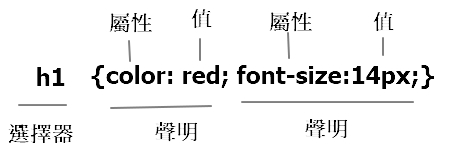
上述規則就表示，為頁面上的所有h1標題應用樣式，其作用是將h1元素內的文本顏色定義為紅色，同時將字體大小設置為14像素。
一個樣式規則中包含多修聲明時，聲明的順序并不重要，并且多條可以在一行內畫寫，也可以在多行內畫寫，為了閱讀方更，建議一行只窵一條聲明，一般是將選擇器和存大括號放在第一行，然後一條聲明寫一行，右大括號則單獨放在最後一行。由于瀏覽器會忽略樣式規則中的所有空格和跳格，建議使用空格或跳格或跳格為每條聲明增加縮進，并在冒號和屬性值之間增加一個空格。如
1 | h1 { |
在定義屬性時，如果屬性的值由多個單詞組成，單詞之間存在空格，則必須把屬性值放在引號中。引號既可以是單引號，也可以是雙引號。如：
1 | p { |
本樣式規則中，font-family屬性的值為Times New Roman，由於該值是多個單詞組成，所以加上了引號。
某些經常在一起使用的樣式屬性，可以組合起來使用一個特殊的復合屬性。復合屬性中，屬性會包含多個值，值之間需要使用空格隔開。
如，描述邊框的border-width、border-style、border-color屬性，就可以使用復合屬性border來一次性設置完成。
1 | img { |
CSS對所有的屬性和值都有嚴格要求，如果聲明的屬性名稱在CSS規範中不存在，或者屬性的值不符合該屬性的要求，則該聲明就不會生效。
1.3.2 CSS 注䆁語法
一個樣式表創建完成後，再過幾個星期，幾個月，甚至几年後，再回過頭來進行修改時，你可能怎麼也想不明白以前為什麼要創建這個樣式，以及它到底有什麼麼作用。對于任何項目，都是如此。
因此，在構建網站時，應該提示自已做了什麼，以及這麼做的原因。慶幸的是，可以通過CSS注䆁，把這些提示信息嵌入到樣式表中。只不過用/*和*/包圍起來的內容。注䆁的內容不會被瀏覽器讀取或執行，而它確為了提供了有益的提示。假如你創了下面的樣式，來解決IE的雙邊距bug:
注意:通常我是使用SCSS來處理，它的注䆁很簡單//也相容CSS原來的注䆁
1 | * hmtl .fl { |
注䆁可以是單行的，如果注釋的內容很長，也可以跨越多行。注釋可以獨占一行，也可以放在聲明塊或聲明語句中。注釋可以出現在CSS代碼的任何位置，但是，不能把注釋放在另一個注釋里面，即注釋不能嵌套。以下都是合法的注釋:
1 | /* reset */ |
如果CSS文件非常，那麼尋找特定的樣式會很困難，一種改進方法是使用大的注釋塊，來把把CSS文件分隔成多個邏輯部分，并在注釋塊的頭部𣵚加一個標志。這樣，搜索這個標志和注釋頭中的前几個字母，就可立即找到要尋找的部分。
1 | /*------------ @ reset ------------*/ |
並非所有東西都能夠很自然的非常明確的壞，這需要開發入進行判斷。總之，代碼分隔得越細致，越合理，磺越容易理解，而且能夠更快地找到要尋找的規則，日後維護起來也越輕鬆。
1.4 CSS屬性的值
CSS中，每個屬性可以接再哪些值都有不同的規定，有的屬性只能接再預定義的值，有的屬性接受數字、長度、百分數、URL或顏色，有的屬性還可以接受多種類型的值。
1.4.1 數字
CSS中有兩類數字:整數和浮點。只有極少數的CSS屬性接受不帶單位的數字，最常見就是line-height、z-index、oopacity，如line-height: 1.5;。
跟數字中的數字一樣，整數和浮點數都可以是正數或負數。因此，以下都是合法的數值:12、1.5、-20。不過，一般情況下，一個屬性會限制數字的取值範圍，如果超出這個範圍，則該聲明無效，瀏覽器會忽略該聲明。
1.4.2 長度
長度必須包含數字和長度單位，并且它們之間不允許出現空格。數字可以是整數或小數，可以是正數或負數。如果數字為0，則可以帶單位也可以不帶。因此，以下都是合法的長度值：
1 | 1.5em -20px , 0 |
CSS長度單位分為絕對長度單位和相對長度單位。使用絕對長度單位時，其值是一個固定的值； 使用相對長度單位時，其長度不是固定的，它會隨著參數值的變化而變化。
常用的絕對長度單位有pt(點)、mm（毫米）、cm（釐米）、in（英寸），pt是一個標準印刷度量單位，一英寸是72點，即1pt=1/72in，mm 、cm、in這幾個長度單位，大家已經很熟悉，不再贅述。
共有3種相對長度單位：em、ex、px，前兩個分別代表m-height和x-height，即字母m的高度和字母x的高度，是常見的印刷度量單位。
px代表”像素“，實際上就是計算機屏幕上的一個點，像素被定義為相對定位，是因為它取決于顯示器的分辨率。一旦分辨確定，設置為px的尺寸就成固定尺寸，不會自動縮放。
em是一個相對長度單位，1em被定義為一種給定字體的font-size值。如果一個元素的font-size為14px，那麼對于該元素，1em就等于14px。當em用于設置元素的font-size屬性本身時，em的值會相對手父元素的字體大小。顯然，em的值會隨元素的不同發生變化。這給計算帶來極大的困難，于是，就產生了rem這個相對單位，它是相對手根元素（即html元素）的字體大小，由于根元素的字體大小𤖥終不變，計算起來就容易多了。
ex是一個相對長度單位，1ex被定義為一慟給定字體的小寫字母”x“的高度。因此，這個值會隨字體的不同而變化。然而，很多瀏覽器都沒有內置ex高度值，只是簡單的取em的值，再取其一半作為ex的值。所以，一般不推薦使用ex這個長度單位。
隨著響應式Web設計的流行，px 已經無法跟上時代的腳步。%、em、rem這幾個能夠自適應的相對長度單位開始流行。
1.4.3 百分數
百分數由一個數字和一個百分號組成，數字和百分號之間，不允許出現空格。百分數可以是整數或小數，可以是正數或負數。如果數字為0，則可以省略百分號。
百分比的值幾乎總是相對于另一個值（如長度單位）計算得到的。每一個允許使用百分比單位的屬性，都要定義百分比參考值。大多數情況下，百分比的參考值都是元素本身的字體大小，即font-size屬性的值。如：
1 | div { |
由于line-height屬性是基于當前元素font-size的值計算得到的。上述代碼就表示，line-height屬性的值為font-size屬性值200%，故得到的行高為200%*14px=28px。
CSS中，所有可繼承的屬性，如果其屬性使用百分比單位來定義，則子元素繼承的是計算後的結果，而不是百分比的值。所以，上述代碼中，為論子元素font-size的值是多少，子元素的行高始終是28px。
1.4.4 顏色
在CSS中，使用color屬性來定義元素中文本的前景色，使用border-color屬性來定義元素邊框的前景色，使用background-color屬性來定義元素的背景色。
在CSS1中，定義了2種表示表顏色的方式：預定義顏色名和RGB顏色。CSS3開始支持HSL顏色模式，借助人性化的HSL顏色模式，Web設計師可用更直觀的定義所需要的顏色，并能很輕鬆的控制網頁中的顏色變化：
預定義顏色名稱
在CSS1中，預定義了17種顏色名稱，分別為
aqua（水綠色）、black（黑色）、blue（藍色）、fuchsia（紫紅色）、grap（灰色）、grddn（綠色）、lime（綠黃色）、maroon（紫獎色）、navy（藏藍色）、olive（橄欖色）、orange（橙色）、purple（紫色）、red（紅色）、silver（銀灰色）、teal（藍綠色）、white（白色）、yellow（黃色）。也可以使用關鍵字transparent，表示透明。RGB顏色
從物理光學試驗中得出結論：通過對紅、綠、藍這三種單色以不同比𠎣的混合，幾乎可以得出自然界所有的顏色，這就是所謂的RGB顏色模式。
RGB顏色模式中，通過R、G、B的值表示顏色，并通過R、G、B分量的變換和疊加，來得到各種各樣的顏色，其中，R為紅色分量，G為綠色分量，B為藍色分量，并為每個分量分配一個從0到255的強度值，數值越大就越白，數值越小就越黑。
在CSS，RGB顏色有3種表示方法：十六進制表示法、數字表示法、百分比表示法。
數字表示法
數字表示法，就是直托用0～255之間的數字表示RGB顏色，格式為
RGB(R,G,B)。可以把RGB顏色想象為由紅、綠、藍三盞燈發出三束光，當三束光疊加在一起就產生了白色，當三盞燈的亮度都減半就產生了灰色，當三盞都關掉就會片漆黑了。得到相應的RGB顏色為:白色RGB(255,255,255)，灰色RBG(127,127,127)，黑色RGB(0,0,0)。如果關掉綠燈和藍燈，只亮紅燈，那麼只會看到一片紅色，即紅色RGB(255,0,0)，如果只亮綠燈，就只會看到綠色，即綠色RGB(0,255,0)如果只亮藍燈，就只會看到藍色，即藍色RGB(0,0,255)。
關掉其其中一盞燈，用其它兩盞燈的光線疊如，則藍+綠=青，紅+藍=洋川，紅+綠=黃，即青色RGB(0,255,255)，洋紅色RGB(255,0,255)，黃色RGB(255,255,0)。
百分比表示法
百分比表示法，就是用0.0％～100.0％之間的百分比表示RGB顏色，0對應0.0％，255對應100.0％。
十來進制表示法
十來進級表示法，即HEX表示法，就是將這些數字值轉化為十來進制，再將它們合并到一起，并在前面加一個井號
#，格式為#RRGGBB。其中，RR為紅色分量，GG為綠色分量，BB為藍色分量，均為兩位十六進制正整數。也就是用十來進制的
0x00~0xff，來表示是進制的0～255，但三個數字之間不能有空格，逗號或任何其他分隔符，如十來進制表示法#590071的含義如下圖各顏色的框各代表各顏色的分量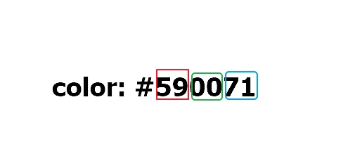
對于#590071，十來進制的59、00、7f分別等于十進制的89、0、127。十六進制表示法中，字母不區分大小寫，7f和7F都是允許的，推薦使用小寫字母。
當十來進制的數值是由三對重復的數用組成時，#RRGGBB就可以簡寫為#RGB如，#ff00ff可簡寫為#f0f，#cc9966可以簡寫為#c9c，這也是推薦的寫法，因為沒有理由讓代碼無謂地變長。
上𠍐3種表示方法，只是RGB顏色不同表示形式而已，其作用是等價的，它們之間可以相互轉換，如
RGB(255,255,255) = RGB(100%,100%,100%) = #ffffff = fff。常見的預定義顏色名稱對應的HEX值及RGB值見表1-1。
顏色名稱 HEX值 RGB值 RGB百分比 black #000 rgb(0,0,0) rgb(0%,0%,0%) silver #c0c0c0 rgb(192,192,192) rgb(75%,75%,75%) gray #808080 rgb(128,128,128) rgb(50%,50%,50%) white #fff rgb(255,255,255) rgb(100%,100%,100%) red #f00 rgb(255,0,0) rgb(100%,0%,0%) purple #800080 rgb(128,0,128) rgb(50%,0%,50%) green #008000 rgb(0,128,0) rgb(0%,50%,0%) yellow #ff0 rgb(255,255,0) rgb(100%,100%,0%) HSL顏色模式，是工業界的一種顏色標凖，通過對色相（H）、飽和度（S）、亮度（L）三個顏色通道的變化，以及它們之間的相互疊加來獲得各種顏色，它幾乎包括了人類視力所能感知的所有顏色，是目前應用最廣的顏色系統之一。
使用HSL顏色模式定義顏色的語法格式為HSL（H，S，L）其中：
H（Hue）分量，指的是顏色的色相，代表的是人眼所能感知的顏色範圍，這些顏色分布在一個360°的色相環上，每個角度代表一種顏色。色相值的意義在於，在不變變光感的情況下，通過旋轉色相環來改變顏色。在實際應用中，只需記註色相環上的六大駐色，它們在它相環上按照60°圓心角的間隔排列，0°紅、60°黃、120°綠、180°青、240°藍、300°洋紅如下個所示
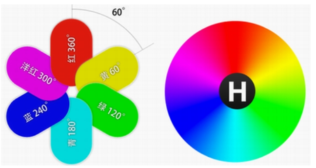
S（Saturation）分量，指的是顏色的飽和度，用0％~100%的值來控制相同色相和亮度下顏色純度的變化。0%表示灰色，100％表示完全飽和。數值越大，顏色中的灰色越少，元素越鮮艷如下圖
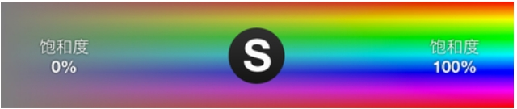
L（Lightness）分量，指的是顏色的亮度，用0%~100%的值來控制顏色的明暗變化，數值越小，顏色越暗，越接近于黑色，到0%就成了黑色； 數值越大顏色越亮，越接近于白色，到100％就成白色，如下圖
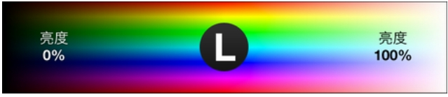
在使用HSL顏色模式表示顏色時，只需選擇一個0到360之間的色相，并將飽和度設為100％，高度設為50％，就會得到這種顏色最純的形式。降低飽和度，顏色就會向灰包變化。增加亮度，顏色就會向白包變化；減少亮度，顏色就會向黑色變化。
如果沒著圓環移動的過程中，就可以得到以下比較重要的顏色：紅色為hsl(0,100%,50%);黃色為hsl(60,100%50%);綠色為hsl(120,100%,50%);青色為hsl(180,100%,50%);藍色為hsl(240,100%,50%);洋紅色為hsl(300,100%,50%)。
透明通道和透明度
適當的使用透明度，可以讓設計效果更加豐富多彩，對于相互重疊的元素，可以為元素設置透明度，讓元素呈現出半透明效果，使其下方的元素可見。
在CSS3出現之前，只能通過瀏器的某些特殊屬性，來實現元素的透明度效果。
在CSS3中，可以通過alpha透明通道和opacity屬性，來設置元素的透明度。它們都是浮點數，取值在
[0.0~1.0]之間，值越接近0，顏色就越透明，如果置為0.0，就為完全透明， 像沒有設置任何顏色，類似的，1.0就表示完全不透明，默認值為1.0。alpha透明通道是一個8位元的灰度通道，該通道用256級灰度來記錄圖像中的透明度信息，定義透明，不透明和半透明區域，其中黑表示透明，白表示不透明，災表示半透明。
opacity屬性可以單獨使用，而alpha透明通道則要作為RGB或HSL顏色模式的alpha分量來使用。支持alpha透明透明通道後，RGB就成為RGBA，格式為RGB(R,G,B,A)，HSL就成為HSLA，格式為HSLA(H,S,L,A)。
當A的值等於1時，RGBA與RGB的效果相同，HSLA與HSL的效果相同。在任何使用顏色的地方都可以使用RGBA或HSLA顏色，如背景、邊框、文本、顏色等。如
1
background-color: rgba(255, 76, 76, 0.9);//10%透明
應用透明度的經典案例是按鍵的淡入淡出效果，其基本原理是，按鈕的原始透明度為某個值，當鼠標懸停到按鈕上時，將按鈕背景的透明度緩慢地變為另外一個值，當鼠標移出按鈕後。再把背影透明度恢復到原始值。
本例分別使用opacity屬性和alpha透明通道，來實現按鈕的淡入淡出效果。代碼如下：
在html
1
2
3
4
5
6
7
8
9
10
11
12
13
14
15
16
17
18
19
20
21
<html lang="en">
<head>
<meta charset="UTF-8">
<meta name="viewport" content="width=device-width, initial-scale=1.0">
<title>Document</title>
<link rel="stylesheet" type="text/css" href="01.css">
</head>
<body>
<h1>test</h1>
<div>
<p>行高是繼承父層計算好的行高</p>
</div>
<input type="submit" value="提交" />
</body>
</html>在01.css
1
2
3
4
5
6
7
8input[type="submit"] {
color: #fff;
font-size: 14px;
padding: 6px 30px;
border-radius: 3px;
border: 1px solid #f00;
background-color: rgba(255, 7, 76);
}可以使用opacity屬性設置透明度：
1
2
3
4
5input[type="submit"]:hover {
opacity: 0.5;
/*緩慢改變透明度*/
transition: all rase-in 0.2s;
}也可以使用alpha透明通道設置透明度：
1
2
3
4input[type="submit"]:hover {
background-color: rgba(255, 76, 76, 0.2);
transition: all rase-in 0.2s;
}從上述代碼可以看出，opacity屬性和alpha透明通道稍微有點不同可以根據需要選擇使用。opacity設置的透明度會對整個元素產生影響（元素的內容也會透明），而使用RGBA或HSLA 則可以讓元素的某些部分有透明效果。所以如果希望一個元素帶有透明的背景、邊框、盒陰影等，但內部的文字仍然不透明，就可以使用RGBA或HSLA。
1.4.5 URI
URI是Uniform Resource Identifier的縮寫，表示統一資源標識符，是一個用于標識某一互聯網資源名稱的字符串。該種標標識允許用戶對任何（包括本地和互聯網）的資源通過特定的協議進行交互操作。URI由包括確定語法和相關協議的方案所定義。
Web上可用的每種資源，如HTML文檔、圖像、視頻片段，程序等，都由一個通用資源標識符進行定位。
在CSS屬性中，使用功能符號url來定義一個URI，為網頁提供一個圖像、視頻及瀏覽器所支持的任何資源。其格式是在url後跟一對小括號，小括號中為URI的值，如：
1 | url(protocol://server/pathname) |
其中，url和開始括號之間不能有空格，而開𤖥括號的後面，及結束括號的前面，既可以有空格，也可以沒有。URI值的兩側，既可以加引號，也可以不加。但是，URI值中包含空格時，必須加引號。加引號時，既可以使用單引號，也可以使用雙引號。URI中，如果包含括號、逗號、單引號、雙引號等特殊字符，則必須使用反斜杠進行轉義，如 \( \) \\。
上述這種方式定義了一個絕對URI。𫍇里的絕對是指。為論這個URI放在哪里，它都能正常工作，因為它定義了Web空間中的一個絕對位置，假設在一個名為https://ttom921.github.io/的Web服務器，該服務器是有一個名為學習Angular-Material的相關使用的目錄，在這個目錄中有一個圖像01-dashboard-basic.png。這種情況下，該圖像的絕對URI將是：
1 | url(https://ttom921.github.io/學習Angular-Material的相關使用/01-dashboard-basic.png); |
不管這URI放在哪里，它都是合法的，而不論包含這個URI的頁面是在服務器https://ttom921.github.io/上，還是在別的地方。
另一種URI是相對URI，之所以如此稱呼，是因為它指定的是一個相對于該URI所文檔的位置而言的。
在CSS中使用相對路徑時，URI是相對于樣式表的位置，而不是要應用樣式的HTML文件的位置。如：
1 | body { |
上述代碼就表示，使用圖像image.jpg作為網頁的背景圖像，圖像文件和css文件位于相同的目錄。
1.4.6 時間
CSS中的時間主要用來指定語言元素的延遲、動畫或過渡的延遲、動畫或過渡的持續時間等。時𫂾不能為負值。
時間可以表示為秒（s），也可以表示為毫秒（ms），秒和毫秒之間可以進行換算，換算公式為1s=1000ms。因此，0.1s和100ms是等價的。
1.4.7 角度
CSS中，有4種表示角度的單位：度（deb）、弧度（rad）、 圈（turn）、梯（grad）。角度允許為負值。
一個圓周總是等於360度、或2π弧度、或1圈、或400梯度。所以90度就可以聲明為90deg、或1.57rad或0.25turn、或100grad。
為論使用哪種單位進行聲明，角度的值都會解䆁為0～360度範圍內的度數，所以，720deg，等同于0deg，-90deg等同于270deg。
但是，需要特別注意，這里只表示最終得到值相同，而有時候，它們的意義和效果卻完全不同。如，在為一個元素定義過渡效果時，如果指定transform: rotate(720deg)，元素會順時針旋轉兩周，如果指定transform: rotate(0deb)，元素卻不發生旋轉。
1.5 創建樣式表
樣式表的倫用是控級網頁樣式，只有創建樣式表，并把它應用到網頁中，才能發發揮樣式表的作用。
1.5.1 創建外部樣式表
外部樣式表，是在網頁外路的樣式表文件中定義的樣式。由于這些樣式并不是HTML文檔的一部分，而是在HTML文檔的外部獨立存在，做稱外部樣式表。
樣式表文件是純文本文件，可以使用任何文本編輯器來編輯，目前是使用VScode來編輯。
更大的網站通𡮝會擁有多個樣式表文件，reset.css、base.css、global.css和main.css是常見的樣式表名稱，它們通常包含應用于網站大多數頁面的樣式規則。
網站制作者通常會為某些區塊創建特有的CSS文件，來作為對基本樣式的補充。如對于一個商業網站products.css可能是為產品相關准備的樣式表。
創建了樣式表之後，需要將它加載到HTML頁面中，從而為內容應用這些樣式規則。可以使用鏈接或導入的方式，來為HTML頁面加載外部樣式表。
鏈接外部樣式表
在HTML文檔的頭部，使用link元素來鏈接外部的CSS文件。在link元素中，通過rel屬性來定義本HTML文檔與被鏈接文檔之間的關系，
rel="stylesheet"表明引入的文件是樣式表； 通過href屬性定義樣式表文件的URL，可以使用相對路徑，也可以使用相對路徑，相對路徑是相對于本HTML文檔而言的。如:1
2
3
4
5
6
7
8
9
10
11
12
13
14
<html lang="en">
<head>
<meta charset="UTF-8">
<meta name="viewport" content="width=device-width, initial-scale=1.0">
<title>鏈接樣式</title>
<link rel="stylesheet" href="style.css">
</head>
<body>
</body>
</html>上述代碼表示，為本文檔引入文件名稱為
style.css的外部樣式表，該樣式表文件與本HTML文檔位以相角目錄下。一個頁面可以包含多個link元素，瀏覽器會加載多個樣式表，合并它們的規則，將其全部應用于頁面。但是，加載樣式表會影響頁面的加載速度。
導入外部樣式表
也可以在HTML文檔頭部的style元素中，使用
@import指令導入一個外部樣式表文件，如：1
2
3
4
5
6
7
8
9
10
11
12
13
14
15
16
17
<html lang="en">
<head>
<meta charset="UTF-8">
<meta name="viewport" content="width=device-width, initial-scale=1.0">
<title>導入樣式</title>
<style>
@import url(style.css);
</style>
</head>
<body>
</body>
</html>這種方式是通過
@import指令，把外部樣式導入到當前頁面，一個文檔中，也可以包含多個，來導入多個樣式表。由于
@import指令效率低下，不但會增加額外的請求次數，還會導致不可預料的間題，故不推薦使用。因此，對大多數情況，還是推薦使用鏈接外部樣式的方式。外部樣式表非常適點給網站上的大多數頁面或者所有頁面設置一致的外觀，可以在一個外部樣式表中定義全部樣式。并讓網站上的每個頁面都加載這個外部樣式表，來確保每個頁面都有相同的設置。
對于有很多頁面的網站，外部樣式表能做到CSS代碼最大限度的重用，日後，如果要改變頁面的外觀，只需編輯CSS文件，而無需修改HTML文件，直正實現表現和內容的分離。
使用外部樣式表的另一個好處是，一互瀏覽器在某頁面加載了色，在隨後瀏覽引用它的頁面時，通常無需再向Web服務器請求該文件，瀏覽器會將它保存到緩存中，也就是保存到用戶的計算機里，并使用這個版本的文件。這樣做可以提供頁面的加載速度。
如果随後對樣式表作了修改，再將它傳偌Web服務器，瀏覽器就會下更新後的文件。而不是使用緩存的文件。
1.5.2 創建內嵌樣式表
內嵌樣式（embed style），就是在HTML文檔頭部的
<style>和</style>之間定義的樣式表如：
1 |
|
這里的<style>標籤是HTML代碼，其作用是當訴瀏覽器，該標籤內的內容是CSS代碼，瀏覽器將按CSS規則，來解析<style>和</style>標籤之間的內容。
這種方式定義的樣式規則，只對本頁面有效，因此，對單個頁面定義特殊樣式時，這種方式比較方更。但是，一個網站往往是由很頁面構成的，這種方式定義的樣式，不能應用到其它的頁面，達不到CSS代碼重用 的目的。并且緩存的好處也不存在了。
更重要的是，這些樣式存放在HTML文件。而不是CSS文件中，導致樣式定義散落在多個頁面中。如果要更新樣式。𧚱不得更新每一個頁面。所以，這種方式不更于維護，也容易出鏌，違背了內容與表現相分離的理念，故不推薦使用。
1.5.3 創建內聯樣式表
內聯樣式表（inline style），就是在HTML元素中，通過style屬性定義的樣式。可以為包含在body內部的任何元素定義style屬性定義的樣式，屬性的值為一條或多修聲明，多條聲明間用逗號隔開，如
1 |
|
上述代碼通過p元素的style屬性，為段落元素定義了一內聯樣式，讓段落中的文本以紅色、粗體顯示。
內聯樣式是所有方法中最直接的一種，但它會導致表現和內容的耦合，與CSS的表現和內容相分離的設計理念背道而馳，極大損害了樣式表的優勢。所以，以常不推薦使用style屬性。
然而，事情并非總是一成不變的。如果某些樣式確實只在某標籤使用一次，也可以使用行內樣式。同樣如果某些樣式僅僅在某文件中使用，也可以使用內嵌樣式。
1.5.4 樣式表的優先級
上述4種應用樣式的方法，各自都有其自身的特定，如果這4種同時應用到同一個HTML元素上時，將會出現優先級的問題，即哪個樣式會生效的問題。
如果內聯樣式、嵌入樣、導入樣式，鏈接樣式同時應用于同一個元件，樣式的優先級規則是高優先級樣式會生效。即高優先級會覆蓋低優先級樣式。
樣式表的優先級按內聯樣式、嵌入樣式、導入樣式、鏈接樣式順序依次降低，其實，也就是就近原則，距離元素越近的樣式，越優先生效，如果這四種樣式都沒有定義，則會應用瀏覽器的默譇樣式。
如，在嵌入樣式中，匙段落的文本顏色定義為黑色
內聯樣式中，把段落的文本顏色定義為紅色
1 |
|
上面代碼中，在內聯樣式和嵌樣式中同時定義了段落文本的color屬性，由于內聯的優先級高于嵌入樣式，故內聯樣式會覆蓋嵌入樣式，文本會以紅色顯示。
1.5.5 樣式繼承與層疊
所謂繼承，就是有些CSS屬性僅影響當前元素，還會影響這些元素的後代。假如給body設置的樣式為：
1 |
|
由于color屬性具有繼承性，那麼body內部的元素，如果沒有對color設置其它規則，都將顯示為紅色。
繼承可以簡儘樣式表，并使之更加高效。假如想讓網頁上的所有文本都使用同一種字體，就不必不每個元慌創建樣式，而只需要給body元素創建一個樣式即可。如：
1 |
|
在body元素中定義字體之後，網頁上的所有元素都將繼承這種字體，這種方法很高效，也很輕鬆，這就是繼承的魅力所在。
當然，繼承也可以應用于網頁的某一部分，如，用div定義了一個區域，通過給該div應用樣式，可以只當該區域內是所有元素使用特殊的樣式，如：
1 |
|
在div元素中定義文本顏色之後，包含在該div內部任何元素，如p、h1、div等，都將繼承相同的文本顏色。
并非所有的CSS屬性都能被繼承，有許多CSS屬性根本不會傳遞給其後代，如border屬性。給body增加邊框，則不會影響到它的後代。當然，這也是有道理的。如果border屬性也能被繼承，則給body增加邊框後，頁面的所有元素將會有一個邊框，這顯然不合適。因此， 影響元素位置的那些屬性，如margin、padding、border等，都不具有繼承性。
但是，無論一個屬性是否具有繼承性，如果將它的值顯示地設置為inherit, 它就具有繼承性。假設在一個article元素中包含幾個段落，并為article元素設置了一個邊框，如果定義以下規則：
1 | p { |
這條規則就可以強制段落元素繼承父元素的border屬性，從而使article元素中的所有段落，都獲得與父元素相同的邊框樣式。
所謂層疊規則是：如果這些規則不沖突，則它們會同時生效； 如果某些規則相互沖突，則高優先級的規則會生效； 如果相同優先級的規則發生沖突，則最後定義的樣式規則會生效。如對p元素定義了兩個樣式規則：
1 |
|
font-family和color屬性，兩個選擇器的規則沒有沖突，這兩個規則會同時生效。而這兩個選擇器同時定義了font-size屬性，故font-size屬性發生沖突，由于這兩個選擇器的優先級相同，則後定義的樣式會覆蓋先定義的樣式，做定義的font-size:16px;會生效。經過層疊後，p元素的最終樣式就變成了：
1 | p { |
2 CSS選擇器
CSS的主要優點之一，就是它能很容易的為所有同類型的元素應用一組樣式，而要將樣式應用到某個特定的HTML元素，還需要一種機制，來找到相應的元素。
在CSS中，實現這一機制的核心就是選擇器，由它來決定將樣式規則應用於哪些元素。有了選擇器，在不改動HTML結構的情況下，通過改變樣式規則，𧚱可以輕鬆改變網頁的外觀，為控制網頁的表現提供了很大的靈活性
內容有
- 基本選擇器
- 關系選擇器
- 屬性選擇器
- 偽元素選擇器
- 偽類選擇器
2.1 概述
2.1.1 HTML DOM
CSS的目的，是實現網頁的表現和內容相分離，由HTML控制網頁的內容，由CSS控制網頁的表現。而CSS的核心是選擇器，選擇器根據HTML DOM來找到相應的元素，并為它們應用樣式，從而表現與內容的分離。因此，在介紹選擇器之前，有必須先了解一下HTML DOM。
DOM是Document Object Model的縮寫，即文檔對象模型。HTML DOM是HTML文檔對象模型的簡稱，用來描述HTML頁面的層次結構。
根據W3C的HTML DOM標準，HTML DOM由節點組成，HTML文檔中的所有內容都是節點：
整個文檔是一個文檔節點
每個HTML元素是元素節點
HTML元素內的文本是文本節點
每個HTML屬性是屬性節點
注䆁是注䆁節點
把一個HTML文檔中的所有元素組織在一起，就構成了一棵DOM樹，文檔中的每個元素、屬性、文本等都代表DOM樹中的一個節點，節點之間存在等級關系。看一個簡單的HTML文檔：
1 |
|
文檔中的每一個元素，在DOM樹中都有自已的位置。每個元素要麼是另一個元素的父元素，要麼是另一個元素的子元素，通常是既作父元素，又作子元素。
DOM樹起始於文檔節點，并由此繼續伸出枝條，直到最低級別的文本節點為止。依據上面的HTML文檔，可以繪制一個清唽的DOM樹，來表示各元素之間的關系，如下圖所示
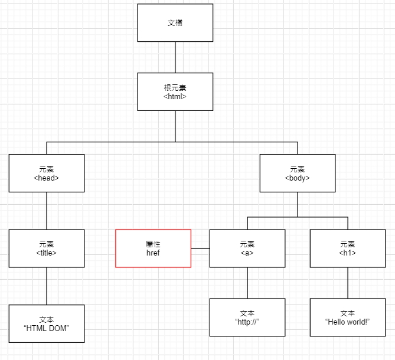
DOM樹中所有的節點彼此間都存在關系，如果一個節是另一個節點的直接上層，則前都是後者的父節點。除文檔節點之外的每個節點都有父節點。如<head>和<body>的父節點是<html>節點，文本節點"Hello world!"的父節點是<h1>節點。
如果一個節點是另一個節點的直接下層，則前者是後者的子節點。大部分元素節點都有子節點，如<head>節點有一個子節點：<title>節點。<title>節點也有一個子節點：文本節點"HTML DOM"。
當節點具有同一個父節點時，它們就是同胞（同級子節點），如<h1>和<a>是同胞，因為它們的父節點均是<body>節點。
節點也可以擁有後代，後代指某個節點的所有子節點，及這些子節點的子節點。 以此類推。如所所的文本節點都是<html>節點的後代。而第一個文本節點是<head>節點的後代。
節點也可以擁有袓先，袓先是某個節點的父節點，或者父節點的父節點，以此類推，如所有的文本節點都可把<html>節點作為袓先節點。
由此可知，一個HTML文檔并不是一個簡單的文本文件，而是一個具有層次結構的邏輯文檔，每一個HTML元素都作為這個層次結構中的一個節點存在。每個節點反映在瀏覽器上會具有不同的外觀，而具體的外觀正是由CSS來決定。
2.1.2 選擇器的分類
CSS的選擇器有多種形式，根據所獲取元素的不同，選擇器分為五大類，基本選擇器、關系選擇器、屬性選擇器、偽元素選擇器、偽類選擇器。
偽類選擇器，按其功能又可細分為：鏈接偽類選擇器、結構偽類選擇器、否定偽類選擇器、目標偽類選擇器、語言偽類選擇器、UI狀態偽類選擇器。如下圖所示
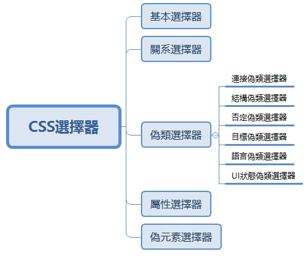
本章所列的選擇器，已經注明定義該選擇器的CSS版本。由于CSS本身具有向後兼容性，如果瀏覽器不理解某個選擇器，它會忽略整個規則。因此，在現代瀏覽器中應用樣式時，不必擔心在老式瀏覽器中會產生影響。
2.2 基本選擇器
基本選擇器是CSS中使用最頻繁、最基礎，也是CSS中最早定義的選擇器。基本選擇器包括元素選擇器、類選擇器、id選擇器。群組選擇器、通配選擇器。
| 選擇器 | 語法 | 功能描述 | 版本 |
|---|---|---|---|
| 元素選擇器 | E | 選擇指定類型的元素 | 1 |
| 類選擇器 | E.class | 選擇類型為E，且class屬性值包含指定類名的元素 | 1 |
| id選擇器 | E#id | 選擇類型為E，且id屬性值包含指定id的元素 | 1 |
| 群組選擇器 | E,F | 同時選擇所有E元素或F元素，E和F之間用逗號隔開 | 1 |
| 通配選擇器 | * | 選擇所有元素 | 2 |
表中，使用E.class或E#id這種方式聲明的選擇器，稱作交集選擇器，它由兩個選擇器直接連接構成，其結果是選擇中兩個選擇器所匹配的交集。
其中，第一個選擇器必須是元素選擇器，第二個選擇器必須是類選擇器或id選擇器。第一個選擇器和第二個選擇器之間沒有空格，連續書寫，如：
1 | ul.nav{...} |
上述規則，首先，只選擇ul元素，而不選擇其它類型的元素。其次，ul元素的class屬性值還必須是nav。如果省略了第一個選擇器，則就變成了普通的選擇器，會選擇class屬性值包含指定類名的任何元素。
說明：
本表及後文的關系選擇器、屬性選擇器、偽元素選擇器、偽類選擇器的表格中提到的E元素，F元素，都是廣義的概念，E、F既可以是HTML元素本身（如p、h1等），也可以是任意的CSS選擇噞（如p.red、div > .red、#red、ul li:hover等），因為任何選擇器得到的結果，最終都是HTML元素。
2.2.1 元素選擇器
一個完整的HTML頁面是由很多不同的元素組成。元素選擇器，是直接使用HTML元素的名稱作為選擇器（如html、p、h1、em、a、img等），由于使用元素的名稱作為選擇器。在W3C標準中，又把元素選擇器稱為類型選擇器、標籤選擇器。
元素選擇器匹配該類型的元素，并匹配DOM樹中該類型元素的每一個實例，并為它們應用樣式。如：
1 | p { color: black; } |
上述規則將匹配文檔中所有的p元素和h1元素，為它們應用樣式。應用上述樣式後，文檔中的所有段落文本為黑色，所有h1標題字體大小為14px。
2.2.2 類選擇器
類選擇器是以獨立于文檔元素的方式來指定樣式，如果應用樣式，而不考慮具體涉及的元素時，最常用的就是類選擇器。
類選擇器，是在類名前面加一個點（.）定義的選擇器。為了提高選擇器的靈活性，類選擇器的名稱，可以由用戶自定義。如。以下代碼定義稱為red的類選擇器：
1 | .red { color: red; } |
要為一個元素應用類選擇器定義的樣式，還需要在HTML代碼中，為元素指定class屬性，并把屬性的值設置為指定的類名。
類選擇器的樣式可以應用手任何HTML元素，一個類可以在一個文檔中使用任意多次，瀏覽器會在文檔中尋找class屬性中包含指定值的元素，為該元素應用該類選擇器所定義的樣式，而不管它是什麼元素。如：
1 | <p class="red">我是段落</p> |
瀏覽器會在文檔中尋class屬性中包含red的元素，則p元素和h1元素都會被選中，因此段落和h1的文本都會變成紅色。
但有時候，僅希望給某種特定類型的元素定義選擇器，此時僅僅使用類名就不能達到需要的效果。
這時，就可以在類選擇器的前面添加特定元素的限定符E，如E.class，則該類選擇器只匹配類型為E，且class屬性值包含指定類名的元素，兩個條件中任何一個不滿足，都不會匹配。如：
1 | p.red { |
選擇器p.red解䆁為：“其class屬性值包含red的𡯍有p元素”。因此，該選擇器就只匹配class 屬性包含red的所有p元素，不匹配其它類型的元素，為論其class屬性中是否包含red。如：
1 | <p class="red">我是段落</p> |
運行上述代碼，只有段落文本會變成紅色。因為h1元素不是段落，這個規則的選擇器不會與它匹配，因此h1元素不會變成紅色文本。
在HTML中，一個元素的class屬性值中可以包含多個類名，類名之間用空格分隔，表示為該元素應用多個類選擇器的樣式。當元素應用多個類的樣式時，類名不分先後順序，元素的最終樣式就是所有這些樣式層疊後的效果。如：
1 | <p class="red bold">本段落的文本將顯示紅色，粗體</p> |
這個p元素同時應用了red和bold兩個類選擇器的樣式， 則段落文本為紅色、粗體顯示。運行結果如下
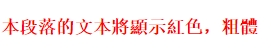
當多個樣式屬性發生沖突時，會發生樣式層疊，其結果是CSS代碼中後定義的樣式，會覆蓋先定義的樣式，而與元素class屬性中聲厺的順厲無關，假如將.bold類改為：
1 | .red { |
得到運行結果如下圖所示：
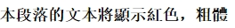
這種情況下，即便class屬性聲明為class="bold red"，段落文本依然是黑色，粗體顯示。因為多個類作用後的結果，僅僅與CSS代碼中類的定義順序有關，與其它因素均無關。
2.2.3 id選擇器
id選擇器于為帶有特定id的HTML元素指定樣式。id選擇器，是選擇器前面加一個井號（#）定義的選擇器。
id選擇器可以應用于任何HTML元素，瀏覽器會在文檔中尋找具有指定id的元素，為該元素應用樣式。id由用戶自定義。如：
1 | <style> |
這個p元素應用了id=”intro”的id選擇器的樣式，段落文本將顯示為粗體。
與類選擇器不同是是，id是唯一性元素，一個id在文檔中被使用一次，一個頁面上，不允𧥸兩個元素具有相同的id。一個HTML元素，也只允𧥸使用一個id，不允許以空格分隔的id列表。
由於class和id是不同的屬性，所以，一個元素可以同時擁有class屬性和id屬性。這時，class屬性定義的樣式和id屬性定義的樣式，將同時對該元素起作用。但是，當class屬性定義的樣式和id屬性定義的樣式發生冲突時，將使用id屬性所定義的樣式，因為id選擇器的優先級高于class選擇器的優先級。
說明：
CSS規範規定，類和id的標識只能包含英文字母[a-zA-Z]、數字[0-9]、下劃線（_）、連字符（-）且只能以字母開頭。并且，類和id標識符是區分大小寫的。因此就不要定義以數字開頭的類名和id。
2.2.4 群組選擇器
要為不同的HTML對象定義相同的樣式時，可以采用群組聲明。如果希望h2元素和段落的文本都為灰色， 則可以使用以下聲明：
1 | h2, |
上述規則在選擇器中指定了多個對象，對象之間用逗號來分隔。逗號當訴瀏覽器，規則中包含不同的選擇器，這樣的選擇器叫群組選擇器。
郡組選擇器可以減少樣式的重復定義。可以把任意數量、任意類型的選擇器放在群組中進行聲明。如：
1 | p, span, .blue, #blue { color: blue; } |
使用逗號對選擇進行分隔，使用頁面中所有的p,spen, .blud, #blud都具有相同的樣式。這樣做的好處是需要使用相同樣式的地方只需要書寫一次，可以減少代碼量，改善CSS代碼的結構，提高網頁的性能。
2.2.5 通配選擇器
通配選擇器爭一個星號（*）表示。單獨使用時，這個選擇器可以與文檔中的依何元素匹配，就像一個通配符。如讓頁面上的所有文本都為黑色：
1 | * { color: black; } |
當然也可以選擇某個元素下的所有元素。在與其他選擇器結合使用時，通配選擇器可以特定元素的所有後代應用樣式。如以下代碼為.demo元素的所有後代，添加一個炎色背景：
1 | .demo * { background: gray; } |
雖然通配選擇嘼的功能強大，但是出于效率考慮，很少有人使用它。由于各個瀏覽器對每個元素上的默認邊距都不一致，為了保証頁面能夠兼容多種瀏覽器，通常在Reset樣式文件中，使用通配選擇器進行重置，來覆蓋瀏覽器的默認規則：
1 | * { margin: 0; padding: 0;} |
2.3 關系選擇器
關系選擇器，顧名思義，是根據HTML元素在DOM樹中的關系來選擇元素，這些關系包括後代、父子、同胞、相鄰同胞。于是，關系選擇器就包括後代選擇器、子選擇器、相鄰同胞選擇器、同胞選擇器。
| 選擇器 | 語法 | 功能描述 | 版本 |
|---|---|---|---|
| 後代選擇器 | E F | 選擇E元素的所有後代F元素 | 1 |
| 子選擇器 | E > F | 選擇E元素的所有子元素F | 2 |
| 相鄰同胞選擇器 | E + F | 選擇緊接在E元素之後的第一個兄弟元素F | 2 |
| 同胞選擇器 | E - F | 選擇E元素之後的所有兄弟元素F | 3 |
2.3.1 後代選擇器
後代選擇器（E F），也稱包含選擇器，用來選擇特定元素的後代。在CSS中，後代是根據HTML文檔中的DOM上下文來決定的。當元素發生嵌套時，內層的元素就成為外層元素的後代。如元素B嵌在元素A內部，B就是A的後代。而且，B的後代也是A的後代，就像家族關系。
定義後代選擇器時，外層的元素寫在前面，內層的元素寫在後面，中間用空格分隔。 後代選擇器會影響到它的各級後代，沒有層級限級，如：
1 | div p { color: red; } |
上述選擇器中，div為袓先元素，p為後代元素，其作用就是選擇div元素的所有後代p元素，不管p元素是div元素的子元素，孫輩元素或者更深層次的關系，都將被選中，換句話說，不論p是div的多少輩的後代，p元素中的文本都會變成紅色。
其實， 後代選擇器中的空格，是用來表示後代層級的，當然就不限于二級的。根據需要，從任一個祖先元素開始，直到想應用樣式的那個元素，都可以被放到後代選擇器鏈中，如：
1 | <body> |
上述導航菜單中，假如希望所有錨文本的字體大小是16px，就可以通過後代選擇器ul a 來選擇ul元素的所有後代，因為後代選擇器會影響到它的各級後代。如
1 | ul a { |
假如又希望第二級列表項的錨文本的字體大小是12px，就可以通過ul ul a的這種多層後代關系的後代選擇器，它只選擇第二級列表項的錨文本。
1 | ul ul a { |
當然，這個後代選擇器也可以寫ul ul li a，以實現更精准的控制。
2.3.2 子代選擇器
子代選擇器（E > F），就是只選擇元素的直接後代（即子元素），而不選擇其它後代的選擇器。這就是子選擇器與後代選擇器的區別。子選擇器中，>兩側的空白符是可選的。
在上一節導航菜單的例子中，假如我們希望第一級列表項的鏈接文本的字體加粗顯示。因為第一級列表項是ul的子元素，這時，就可以使用子選擇器來實現。如：
1 | <style> |
2.3.3 相鄰同胞選擇器
相鄰同胞選擇器（E+F），選擇緊跟在某個元素的後面，且具有相同父親的元素。換句話說，E和F是同輩元素，F緊跟在E元素後面，即它們之間沒有其他同胞元素。相鄰同胞選擇器中，+兩側的空白符是可選的。
如一些博客站，博文標題後面的第一段是博文的摘要。HTML代碼如下：
1 | <body> |
上述代碼中，第一個p元素是h1元素相鄰同胞元素。為了獻顯摘要，就可以使用閜鄰同胞選擇器為摘要應用特殊樣式，如讓摘要顯示為綠色、標楷體，并且有1px的灰色虛線框：
1 | <style> |
運行結果如下：
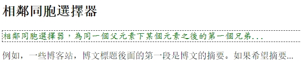
2.3.4 同胞選擇器
同胞選擇器（E～F），用于選擇某元素後面的所有同胞元素。也就是說，E和F是同輩元素，且F在E元素的後面，它們之間可以有，釓可以沒有其他同胞元素。
如在博客站中，博文標題後面的是正文，正文用段落組織。HTML代碼如下：
1 | <body> |
上述代碼中，所有的p元素都是h1元素的同胞元素。此時，就可以使用同胞選擇器，讓所有段落都首行縮進兩個字符，并使用1.5偣的行距。
1 | <style> |
運行結果如下
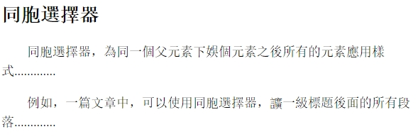
2.4 屬性選擇器
在HTML中，可以通過元素各種各樣的屬性，來給元素增加很多附加信息。如通過width屬性，可以指定元素的寬度； 通過id屬性，可以區分不同的元素，并通過Javascript來控制這些元素的內容和狀態。
以往的CSS中，大量使用類選擇器來定義樣式。由于類選擇器并不能說明什麼樣式服務于什麼元素。因此對于一大型網站，CSS代碼比較龐大，若要修改某個樣式，就成為非常頭疼的事情。
CSS的屬性選擇器使上述問題迎刃而解，因為它是語義化的選擇器，可以根據元素是否擁有某個屬性或屬性的值來選擇元素。
| 選擇器 | 功能描述 | 版本 |
|---|---|---|
| E[attribute] | 選擇擁有屬性attribute的E元素，不考慮屬性的值 | 2 |
| E[attribute = val] | 選擇屬性attirbute的值等於val的E元素 | 2 |
| E[attribute ~= val] | 選擇屬性attribute的值是用空格分隔的多個單詞，其中一個單詞的值等於val的E元素 | 2 |
| E[attribute |= val] | 選擇屬性attribute的值是用連字符“-”分隔的單詞，并以val開頭的E元素，主要用於lang屬性，比如“en”，“en-us”、”en-gb”等 | 2 |
| E[attribute *= val] | 選擇屬性attribute的值包含val子字符的E元素 | 3 |
| E[attirbute ^= val] | 選擇屬性attirbute的值以val開頭的E元素，val為完整的單詞或單詞的一部分 | 3 |
| E[attirbute $= val] | 選擇屬性attribute的值以val結尾的E元素，val為完整的單詞或單詞的一部分 | 3 |
（1）E[attribute]選擇器
該選擇器表示，選擇擁有attribute屬性的E元素，不管屬性的值是什麼，如果省略E，則表示選擇任何類型的元素，只要它擁有attribute屬性（下同）。
如為所有包含rel屬性的超鏈接應用樣式，讓其文本為綠色：
1 | a[rel] { |
還可以根據多個屬性進行選擇，只需將多個屬性鏈接在一起即可。如將同時帶有href和title屬性的所有超鏈接設置為紅色：
1 | a[href][title]{ |
（2）E[attribute = val] 選擇器
該選擇器表示，選擇設置了屬性attrivute，且屬性的值為val的E元素。如將指向首頁的所有超鏈接設置為紅色：
1 | a[href="https://ttom921.gitlab.io/"] { |
在處理表單時，許多元素都使用相同的標籤，如復選框、文本輸入框、提交接鈕等，都使用input標籤，而實際上它們的功能卻完全不同，其功能由type屬性的值來決定。如果僅僅想為文本輸入框添加邊框，就可以使用這個選擇器，如
1 | input[type = "text"] { |
該選擇器也抜持根據多個屬性進行選擇，只需要將多個屬性-值鏈接在一起即可，如將href屬性值為https://ttom921.github.io/，且title屬性值為”被施工的Tom的記錄”的所有超鏈接加粗顯示：
1 | a[href="https://ttom921.github.io/"][title = "被施工的Tom的記錄"]{ |
需要注意的是，該選擇器的指定的屬性值必須與HTML標籤中的屬性值完全匹配才行， 否則就會選擇鐌敗，如在HTML中的class屬性中，如果包含多個類名，類名之間用一個空格分隔：
1 | <p class="urgent warning"> urgent warning</p> |
如果要根據class屬性的值來選擇這個元素，必須寫成：
1 | p[class = "urgent warning"]{ |
要求選擇器的屬性值必須與HTML標籤中的屬性值完全相同，urgent在前，warning在後，就連空格的個數也要完全相同，否則就會匹配失敗。
（3）E[attribute ~= val]選擇器
該屬性選擇器表示，選擇擁有屬性attribute，且屬性的值是用空隔的列表，其中一個列表表為val的E元素。
在HTML中，這方面最經典的例子就是class屬性，它能接受一個或多個詞作為其屬性值。還是前面的示例：
1 | <p class="urgent warning"> urgent warning</p> |
如果要選擇class屬性值中包含warning的元素，寫成下面這個樣子就可以了：
1 | p[class ~="warning"]{ |
其實，該選擇器只要求屬性中包含指定的值即可，屬性的值是否是詞的列表也無關緊要，因此，上述選擇器也會匹配class = "warning"的段落。也就是說，p[class ~="warning"]和p.warning的作用是等價的。
（4）E[attribute |= val]選擇器
該屬性選擇器表示，選擇擁有屬性attribute，且屬性的值是用連字符”-“分隔的單詞，并以val開頭的E元素，主要用於lang屬性，比如”en”、”en-us”、”en-gb”等等。
如通過使用通用選擇器，這個選擇器選擇任何帶有lang屬性且屬性值以en開頭的元素：
1 | *[lang += "en"]{ |
上述規則就會選擇lang屬性值等於en，或以en-開頭的所有元素。因此，以下示例中的前兩個會被選中，而後兩個不會被選中：
1 | <h1 lang="en" >Hello!</h1> |
當然，該選擇器可以用於依何屬性和值，假如一個文檔中有一系例個像，每個圖像的文件名形如figuer-1.gif和figuer-2.jpg，就可以使用以下選擇匹配所有這些圖像：
1 | img[sr != "figuer"]{ |
（5）E[attribute *=val]選擇器
該屬性選擇器表示，選擇擁有屬性attribute，且屬性的值包含val子字符串的E元素，
假如網站在鏈接類名中添加nav字串，來區分導航鏈接，主導航的類名為mainnav，頁碼導航的類名為pagenav:
1 | <div class="mainnav"> |
如果想去掉所有導航鏈接的下劃線，就可以使用該選擇器：
1 | div[class *="nav"] a { |
（6）E[attribute ^= val]選擇器
該屬性選擇器表示，選擇擁有屬性attribute，且屬性的值以val開頭E元素，val為完整的單詞或單詞的一部分。
如為了突顯指向網站外部的鏈接，就可以使用E[attribute ^= val]屬性選擇器，來尋找所有以http:開頭的鏈接，在右側添加外部鏈接的小圖標。
1 | a[href ^= "http://"]{ |
（7）E[attribute $= val]選擇器
該屬性選擇器表示，選擇擁有屬性attribute，且屬性的值以val結尾的E元素，val為完整的單詞或單詞的一部分。
對於一𠥶不載站，用戶可以下載各種不同類型的文件，而文件類型是根據超鏈接中hrep屬性值的最後幾個字符來確定：
1 | <a href ="a.doc">DOC文件</a> |
這種情況，就可以使用該屬性選擇器，檢測文件的擴展名，并為不同類型的文件添加不岣的個標，以提來用戶體類：
1 | a{ |
2.5 偽元素選擇器
偽元素選擇器，并不是基于直正的元素，而是基于元素當前所具有的特性來選取元素。由于這些元素本身不存在於文檔中，只是基於元素抽象，因此稱作偽元素。
偽元素選擇器是CSS中已經定義好的選擇器，不能由用戶隨便起名，只能按CSS規定的標准格式使用，語法格式為：
1 | 選擇器：偽元素 { 屬性：值 } |
偽元素選擇器在CSS中一直存在，但CSS3對偽元素進行了一定的調整，把選擇器和偽元素之間冒號，語CSS1和CSS2.1中的一個冒號，改成了兩冒號。但是，為了向下兼容，現代瀏覽器仍然支持老的寫法，因此，兩種寫法都是合法的。
| 選擇器 | 功能描述 | 版本 |
|---|---|---|
| E:first-letter/E::first-letter | 選擇E元素內的第一個字符 | 1/3 |
| E:first-line/E::first-line | 選擇E元素內的第一行 | 1/3 |
| E:before/E::before | 在E元素之前插入由content屬性生成的內容 | 2/3 |
| E:after/E::after | 在E元素之後插入由content屬性生成的內容 | 2/3 |
| E::placeholder | 選擇表單輸入框文字占位符 | 3 |
| E::selection | 選擇被用戶選取的元素 | 3 |
E:firest-letter/E::first-letter
E::first-letter偽選擇器用於選擇E元素中的第一個字符，第一個字符包括E::before插入的內容。許多報刊或雜誌的文章中，開篇第一個字都很大，通過首字放大來吸引讀都的眼球。而這個首字放大的交果，就可以使用
E::first-letter偽選擇器來實現。如：1
2
3
4
5<style>
p:first-child::first-letter {
font-size: 3em;
}
</style>1
2
3
4
5
6<body>
<p>許多報刊或雜誌的文章中，開篇第一個字都很大，通過首字放大來吸引讀都的眼球。而這個首字放大的交果，就可以使用`E::first-letter`偽選擇器來實現。</p>
<p>首先，使用`p:first-child`選擇第一個段落，然後，再使用`E::first-letter`偽選擇器，這樣的話，只有第一個段落中的第一僤字是正常字體的3倍，以免所有段落的第一個字都被放大。</p>
<hr>
</body>首先，使用
p:first-child選擇第一個段落，然後，再使用E::first-letter偽選擇器，這樣的話，只有第一個段落中的第一僤字是正常字體的3倍，以免所有段落的第一個字都被放大。E:first-line/E::first-line
E::first-line偽選擇器用於選擇E元素中的第一行文本。第一行是指在瀏覽器中顯示的第一行文本，如果調整瀏覽器窗口的尺寸，第一行的內容會跟著變化。第一行的內容包括E::before和E::after插入的內容。如讓段落的第一行文本以紅色顯示：1
2
3p::first-line {
color: red;
}1
<p>E::first-line偽選擇器用於選擇E元素中的第一行文本。第一行是指在瀏覽器中顯示的第一行文本，如果調整瀏覽器窗口的尺寸，第一行的內容會跟著變化。第一行的內容包括`E::before`和`E::after`插入的內容。如讓段落的第一行文本以紅色顯示</p>
E::befor/E::after
使用
E::befor和E::after偽元素選擇器，可以很方便地為頁面添加一些令人難以置信的設計效果。它們可以跟content屬性結合使用，來創建所謂的生成內容。并將生成的內容插入到元素E的前面或後面。E::before和E:after的作用相同。只是插入位置不同而已。僅管生成的內容不會成為DOM的一部分，但同樣可以通過CSS來格式化生成的內容。可以設置生成內容的顏色、字體、背景顏色、背景圖像（包括漸變）、寬度、高度、邊框、圓角等樣式。如果未設置樣式，則生成的內容會繼承元素自身的可繼承屬性。
使用
E::before和E::after的好處是，可以直接通過CSS向頁面添加內容，而不必在頁面上增加HTML元素。可插入的內容包括：- 文本
通過content屬性來指定待插入的文本，文本會原封不動輸出，即便文本中包含HTML標記也不例外。如在一個段落的前後，分別插入指定的文本：
1
2
3
4
5
6
7
8
9p::before {
color: #00f;
content: "<strong>段落之前插入的內容</strong>.";
}
p::after {
color: #f00;
content: ".段落之後插入的內容";
}1
<p>段落文本</p>
由於生成的內容不會成為DOM的一部分，因此，這些HTML標記僅僅作為純本本顯示在頁面上，運行結果如下
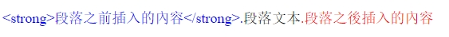
- 文本符號
生成內容中，有一種特殊形式，就是文本符號，如雙引號、單引號，括號等，在一個元素前微插入文本符號的方法為：
首先，在元素樣式中，棒過
quotes屬性來定義文本符號的內容，quotes屬性的值必須是一對字符串，中間用一個或多空格分開，第一串定義了開始符號（open-quote），第一串定義了結束符號（close-quote）。因此，以下三種聲明中，只有第一串是合法的：1
2
3cite { quotes: '“' '”'; }
cite { quotes: '“'; }
cite { quotes: '”'; }由於文本符號是字符串，所以，要用引號把字符串包圍起來，可以使用雙引號，也可以使用單引號，事實上，文本符號可以是任意字符串，因此，以下聲明都是合法的：
1
2
3cite { quotes: "{" "}"; }
cite { quotes: '(' ')'; }
cite { quotes: 'start' 'end'; }然後，把content屬性的值設置為
open-quote和close-quote，就可以在元素的前面和𢕝面分別插入由open-quote和close-quote定義的文本符號，如：1
2
3
4
5
6
7
8
9
10
11
12cite {
quotes: '“''”';
font-style: normal;
}
cite::before {
content: open-quote;
}
cite:after {
content: close-quote;
}1
<p>子在川上日:<cite>逝者如斯夫</cite></p>
上述的代碼，在引文的兩側分別添加雙引號，運行結果如下
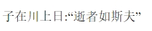
因為不同的語言有不同的文本符號，如中文使用全角引號，英文使用半角引號，所以，使用
quotes屬性來確定使用什麼文本符號是迶道理的。當然，
quotes屬性可以支持任意多層嵌套引用模式。通常的做法是，先以雙引號開頭，內層嵌套的引用使用單引號如1
2
3
4
5
6
7
8
9
10
11
12cite {
quotes: '“''”''‘''’';
font-style: normal;
}
cite::before {
content: open-quote;
}
cite::after {
content: close-quote;
}1
<p> 《水調歌頭。游泳》：<cite>子在川上日:<q>逝者如斯夫</q></cite></p>
上述代碼，外層引文使用雙引號，內層引文引用單引號運行結獰如下
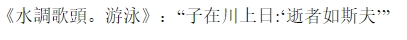
CSS2.1規範還規定，如果引號的嵌套層數大於已定義的引號對數，更深層次的嵌套，將使用最後一對引號。
外部資源
使用E::before和E::after選擇器，不僅可以插入文本，也可以插入外部資源，如圖片。插入外部資源時，需要在content屬性中，通過url來指定資源的路徑。
1
2
3
4
5
6
7
8a { display:block; padding:4px; font-size:14px; }
a::before { padding-right:10px; }
a[href $= "doc"]::before { content: url('img/doc.gif'); }
a[href $= "xls"]::before { content: url('img/xls.gif'); }
a[href $= "ppt"]::before { content: url('img/ppt.gif'); }
a[href $= "pdf"]::before { content: url('img/pdf.gif'); }
a[href $= "rar"]::before { content: url('img/rar.gif'); }
a[href $= "wmv"]::before { content: url('img/wmv.gif'); }1
2
3
4
5
6<a href="a.doc">DOC文件</a>
<a href="a.xls">XLS文件</a>
<a href="a.ppt">PPT文件</a>
<a href="a.pdf">PDF文件</a>
<a href="a.rar">RAR文件</a>
<a href="a.wmv">WMV文件</a>如果瀏覽器出于某種原因不支持所指定的資源，如插入SVG，但該瀏覽器不能識別SVG，此時，瀏覽器就會忽略該資源，不插入任何內容。
雖然CSS2.1規範，可以通過url屬性來插入音頻、視頻或瀏覽器搖擣的其他任何資源。但目前為止，還濡有任何瀏覽器支持。
元素屬性值
除了文本和外部資源，也可以插入元素的某個屬性值。插入屬性值時，需要在content屬性中，通過attr來指定元素的屬性名稱。
如，為了方便用戶查看外鏈接的地址，可以匙頁面上的每個外面鏈接的href屬性值顯示在鏈接的徫後面：1
2
3a[href ^="https://"]::after {
content: " [ "attr(href) "]";
}上述代碼的運行結果如下 <img src="2020-04-27_10_05_14_Image.jpg" style="zoom:80%;" /> 注意，如果插入的屬性不存在，則會在相應用的位置插入一個空字符串。另外，到目前為止，各瀏覽器對attr屬性值的支持有限，并非依任何屬性都能支持。1
<a href="https://ttom921.github.io/">被施工的Tom的記錄</a>
空內容
如果設置content:""，則不插入任何內容，借助元素自身的特征，通過巧妙設置一些CSS屬性，雖然在元素的前後沒有插入任何內容，卻可以實現很多非常有趣的效果。如1
2
3
4
5
6
7
8
9
10
11
12
13
14
15
16
17
18
19
20
21
22
23
24
25
26
27
28
29
30
31
32
33
34#gossiop {
width: 96px;
height: 48px;
background: #fff;
border-color: #000;
border-style: solid;
border-width: 1px 1px 50px 1px;
border-radius: 100%;
position: relative;
}
#gossiop::before {
content: "";
width: 12px;
height: 12px;
top: 50%;
left: 0;
position: absolute;
background: #fff;
border: 18px solid #000;
border-radius: 100%;
}
#gossiop::after {
content: "";
width: 12px;
height: 12px;
top: 50%;
left: 50%;
position: absolute;
background: #000;
border: 18px solid #fff;
border-radius: 100%;
}1
<div id="gossiop"></div>
項目符號
插入的內容還可以是列表的項目符號，只要list-style-type屬性能支持的符號類型，均可插入。這是一個非常實用的功能。
假如在寫一篇文章，文章有各級標題，有時需要調整標題的順序。如果每次調整順序或增刪標題後，都要人工重新調整編號，就極不方便。如果采用自動編號，那就方便多了。這情況，就可以借助content屬性，在標題前插入自動編號，省時省力。插入自動章編號的具體方法，將在11.3.1節中詳細介紹，這里不再贅述，先有個識認𣄵可以了。
E::placeholder
E::placeholder偽選擇器用於控級表單輸入框位符的外觀，它允許設計師改變文字占位符的樣式。默認情況下，占位符文字為淺灰色，為邊框。目前所所的瀏覽器都對支持該瀏覽器，需要添加瀏覽私有前綴。如
1
2
3
4input::-webkit-input-placeholder {
color: #f00;
border: 1px solid #00f;
}1
<input placeholder="用戶名">
上述代碼，把占位符文本的顏色設置為紅色，并為它添加了一個寬度為1像素的監色實線邊框，運行結果如下
<img src="2020-04-27_10_44_00_Image.jpg" style="zoom:80%;" />
**E::selection**
E::selection選擇器用於選擇被選中的文本，可以使用該選擇器，為被選中的文本設計一個與眾不同的效果，如改變其背景色、前背色、文字陰影等。
這果有一個文本輸入框和一個p元素，當文本輸入框處於被選中狀能時，被選中文本的背景色將會變成綠色。
1
2
3
input[ type="text"]::selection {
background: #0f0;
}
1
<input type="text"></input>
上述代碼運行效果如下
<img src="2020-04-27_10_53_49_Image.jpg" style="zoom:80%;" />
這里有一個段落，沒落中被選中文本的背景色將會變成黑色，文本顏色會變成候色，并為文本添加了陰影代碼如下
1
2
3
4
5
p::selection {
background: #000;
color: #fff;
text-shadow: 1px 1px 0 rgba(255, 255, 255, 1);
}
1
<p>滑鼠選中這段文字後，文本的背景色將會變成黑色，文本顏色會變成候色，并為文本添加了陰影，快用滑鼠選中試一試吧O(∩_∩)O~</p>
上述代碼的運行效果如下
<img src="2020-04-27_10_59_45_Image.jpg" style="zoom:80%;" />2.6 偽類選擇器
偽類選擇器，就是基於元素當前所處狀態來選取元素。由於狀態通常是動態變化的，當元素處於一個特定狀態時，它可能得到一個偽類的樣式；當狀態改變時，它又會失去這個樣式。由此可知，它是基於文檔之外的抽象，所以稱為作偽類。
偽類選擇器是CSS中已經定義好的選擇器，不能由用戶隨更起名，只能按CSS規定的標准格式進行使用。其語法為：
1 | 選擇器:偽類名 { 屬性: 值} |
2.6.1 鏈接偽類選擇器
在CSS中，最常用的偽類選擇器，就是使用在鏈托的錨元素上的選擇器，用於定義不同狀態下的鏈接樣式。鏈接偽類并不存在於HTML中，只有當用戶和網站交互時，才能體現出來。
| 選擇器 | 功能描述 | 版本 |
|---|---|---|
| E:link | 選擇未被訪問過的鏈接 | 1 |
| E:visited | 選擇已被訪問過的鏈接 | 1 |
| E:active | 選擇被激活（即滑鼠已經按下，還沒有䆁放）的E元素 | 1 |
| E:hover | 選擇滑鼠懸停其上的E元素 | 1 |
| E:focus | 選擇獲得焦點的E元素 | 1 |
在HTML中，超鏈接是指所有帶有href屬性的a元素。可以使用鏈接偽類來區分未訪問是錄接和已訪問的鏈接：
1 | a:link { |
1 | <a href="https://ttom921.github.io/">被施工的Tom的記錄</a> |
當然，對於鏈接偽類，可僅可以應用顏𢄴，還可以應用更多樣式。如對已訪問是鏈接除了紫色外，還可以有一條刪除線。
僅管:link和:visited非常有用，但它們是靜態的，第一次顯示之後，它們不會再改變元素的樣式，并且它們只用手錨元素，因此被稱作鏈接偽類或錨偽類。
而:hover、:focus、:active則不同它們可以根據用戶行為動態改變文檔的外觀，故被稱為動態偽類，或用戶行偽類。
最初，動態偽類總是用來設置超鏈接的樣式，不過，現在它們可以應用到任何元素。如在表格上行上使用:hover偽類，表單的提交上使用:acrive偽類等。如：
1 | tr:hover { |
另外，還可把鏈接偽類結合在一起使用，來創造更豐富的樣式，如定義已被訪問鏈托的懸停效果：
1 | a:visited:hover { |
用哪種畫寫順序并不重要，a:visited:hover和a:hover:visited媮會得到相同的效果。但是，不要把互斥的偽類結合在一起，如一個鏈接不能同時是未訪問和已訪問狀態。因此a:link:visited沒有依何意義。
2.6.2 結構偽類選擇器
結構偽類選擇器，可以根據元素在文檔中所處的位置，來動態選擇元素，從而減少HTML文檔對ID或類的依賴，有助於保持代碼乾淨整潔。
| 選擇器 | 功能描述 | 版本 |
|---|---|---|
| E:last-child | 選擇父元素的倒數第一個子元素E，相當於E:nth-last-child(1) | 3 |
| E:nth-child(n) | 選擇父元素的第n個子元素，n從1開始計算 | 3 |
| E:nth-last-child(n) | 選擇父元素的倒數第n個子元素，n從1開計算 | 3 |
| E:first-of-type | 選擇父元素下同種標籤的第一個元素，相當於E:nth-of-type(1) | 3 |
| E:last-of-type | 選擇父元素下同種標籤的倒數第一個元素，相當於E:nth-last-fo-type(1) | 3 |
| E:nth-of-type(n) | 與:nth-child(n)作用類似，用作選擇同種標籤的第n個元素 | 3 |
| E:nth-last-of-type | 與:nth-last-child作用類似，用作選擇同種標籤的倒數第一個元素 | 3 |
| E:only-child | 選擇父元素下僅有的一個子元素，相當於E:first-child:last-child或E:nth-of-child(1):nth-last-child(1) | 3 |
| E:only-of-type | 選擇父元素下使用同種標籤的唯一子元素，相當於E:first-of-type:last-of-type或E:nth-of-type(1):nth-last-of-type(1) | |
| E:empty | 選擇空節點，即沒有子元素的元素，而且該元素也不包含任何文本節點 | 3 |
| E:root | 選擇文檔的根文素，對於HTML文檔 | 3 |
結構偽類選擇器很容易遭到誤解，需要特別強調。如p:first-child表示選擇父元素下的第一個子元素p，而不是選擇p元素的第一個子元素。
需要注意的是，結構偽類選擇器中，子元素的序號是從1開始的，也就是說，第一個子元素的序號是1，而不是0。換句話說，當參數n的計算結果為0時，將不選擇任何元素。
接下來，簡單介紹:first-child、:last-child、:nth-child、nth-of-type、:empty這幾個選擇器，其他選擇器的功能在表格中已經描述清楚，不再贅述。
E:first-child和E:last-child
:first-child和last-child分別用於選擇元素的子元素中，符合條件的第一個和最後一個子元素。:first-child偽類在CSS2就已經存鄉，:last-child偽類是CSS3新增的偽類。如對於下面的tab菜單，希望該tab菜單的第一個元素，和最後一個元素。HTML代碼如下
1
2
3
4
5
6
7<body>
<ul class="tabMenu">
<li><a href="# ">公司介紹</a> </li>
<li><a href="# ">產品中心</a> </li>
<li><a href="# ">新聞動態</a> </li>
</ul>
</body>在CSS3之前，直接選擇class為tab元素的第一個或最後一個子元素，是不可能的。現在，通過
:first-child和:last-child偽類，就可以輕鬆實現，CSS代碼如下1
2
3
4
5
6
7
8
9<style>
.tabMenu li:first-child {
background-color: red;
}
.tabMenu li:last-child {
background-color: yellow;
}
</style>上想的運行結果如下
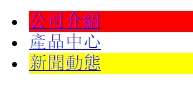
E:nth-child(n)
E:nth-child(n)用於選擇某個父元素的一個或多個特定的子元素。n表示不確定的數字，th是英語中序數詞的後綴。因此，nth-child就表示第n個子元素。該選擇器的參數n可以是數字、公式或關鍵字：
- 數字：可以是依可大於0的正整數。如
.tab li:ntho-child(2)表示選擇class為.tab的父元素下，第2個li子元素。 - 公式：格式為
(an+b)。其中，a表示周期的長度，n是計數器（從0開始）, b是偏程值。如:nth-child(n+4)選擇序號大於等於4的元素，:nth-child(-n+4)選擇序號小於等於4的元素，:nth-child(2n)選取序號為偶數的元素，:nth-child(2n+1)選取序號為奇數的元素，:nth-child(3n)選擇序號為3 、6、9…的子元素（即“隔二選一”），:nth-child(3n+1)選取序號為1、4、7、10…的子元素，等等。 - 關鍵字：只有
odd和even兩個關鍵字。odd表示選取序號為奇數的元素，交果等同於:nth-child(2n-1)和:nth-child(2n+1);even表示選取序號為偶數的元素，效果等同於:nth-child(2n)。
- 數字：可以是依可大於0的正整數。如
E:nth-of-type(n)
:nth-of-type(n)與:th-child(n)的作用和使用方法完全相同，唯一不同的是，它用來選擇某個父元素四，指定類型的一個或多個特定的子元素。E:empty
選擇空節點，即不包含任何子元素的元素，也就是內容為空白的元素。因為文本節點本身也被看作子元素，所以，包含文本節點的元素就不是空元素，哪怕是一個空格，如：
1
2
3
4<div>
<p>我包含文本節點，我不是空元素</p>
<p></p>
</div>對上述HTML代碼調用樣式如下：
1
2
3
4
5p:empty {
height: 25px;
background: #eee;
border: 1px solid #f90;
}上述HTML代碼中，由於最後一個p元素是空節點，則會被
p:empty選擇器選中。於是它就會表現為一個高度為25px，背影為灰色，帶有1px的橙色邊框的矩形框。運行結果如下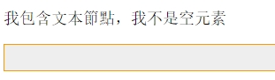
:nth-child與:nth-of-type的區別：
:nth-child和:nth-of-type都能選擇子元素，它們到底有什麼區別呢？區別其實也很簡單，
E:nth-child(n)是把所有子元素作為選擇對象，選擇其中的第n個子元素，且這個子元素的類型必須是E，如果不是，則選擇失敗。而E:nth-of-type(n)則先把類型為E的所有子元素選擇出來，從1開台編號，然後把這些子元素作為選擇對象，選擇其中的第n個。假如有以下HTML代碼片段：1
2
3
4
5
6
7<div>
<ul class="demo">
<p>zero</p>
<li>one</li>
<li>two</li>
</ul>
</div>上述代碼中，
.demo li:nth-child(2)是從.demo的所有子元素中找第二個子元素，且第二個子元素的類型必須是li，選擇結果為<li>one<li>節點；.demo li:nth-of-type(2)先把.domo的所有類型為li的子元素找出來，然後選擇其中的第2個，選擇結果為<li>two</li>節點。
2.6.3 否定偽類選擇器
否定偽類選擇器用來選擇不滿某些條件的元素。
| 選擇器 | 功能描述 | 版本 |
|---|---|---|
| E:not(selector) | 選擇未被選擇器（selecotr）所選中，且類型為E的元素 | 3 |
如果想對某個結構元素使用樣式，但是又想排除這個結構下的某些子結構時，否定偽類選擇器就非常有用，它可以過濾掉某些內容。
如在美化表單時，常常會給表單中所有的input添加一個邊框，而單選按鈕添加邊框後就非常難看。𫍇時，否定偽類就可以派上用場。代碼如下：
1 | <style> |
html
1 | <body> |
2.6.4 目標偽類選擇器
一個URI，除了可以直接向某文檔外，還可以通過井號（＃）後跟一個錨點或元素id，來指向頁面的某個特定元素。
目標偽類選擇器，就是用來匹配頁面上被URI的某個標識符指定的目標元素，并為它應用樣式。
| 選擇器 | 功能描述 | 版本 |
|---|---|---|
| E:target | 選擇該文檔中特定“id”的元素 | 3 |
假如在index.html頁面中有3個<a>元素，id為catlog、about、contact，它們分別代表一個書籤。HTML代碼如下
1 | <body> |
假如有一個外部鏈結，<a href="index.htm#contact">關於我們</a>，就表示鏈結的目標為index.htm文檔中id為contact的書籤，當用戶點擊該鏈結時，跳轉到index.htm文檔後，頁面會向下滾動到contact書籤的位置。
如果頁面內容非常多，常常很難看出鏈結跳轉到哪個書籤的位置，這種情況下，就可以使用目標偽類選擇器:target，為目標元素設罝特殊的樣式。這樣，用戶進入頁面後，就會一目了然。CSS代碼如下：
1 | <style> |
上述代碼為目標超鏈結元素a定義了特殊的背景顏色，用戶進入頁面後，跳轉到任何一個畫籤，都可以提醒用戶當前所處的書籤位置。運行結果如下
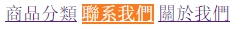
2.6.5 語言偽類選擇器
語言偽類選擇器，用來匹配使用指定語言的元素。對使用多語言版本的網站，可以根據不同語言版本，設置不同的樣式。
| 選擇器 | 功能描述 | 版本 |
|---|---|---|
| E:lang(language) | 選擇使用指定語言，即lang屬性等於language的E元素 | 2 |
在HTML中，可以通過元素的lang屬性，來定義該元素所使用的語言。如
1 | <body lang="en"> |
而語言偽類選擇器，就是根據元素的lang屬性，來匹配使用指定語言的元素。可以根據不同的語言版本，設置不同的字體風格、定義不同的引號標記等。
如有一個英文的段落和一個中文的段落，希望英文使用Arial字體、中文使用宋體，英文使用半角引號、中文使用全角引號。HTML代碼如下：
1 | <body> |
這個就可以通過語言偽類選擇器，為英文段落和中文段落定義不同的字體和不同的引號樣式來實現。CSS代碼如下：
1 | <style> |
運行結果如下圖
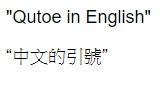
2.6.6 UI狀態偽類選擇器
UI狀態偽類選擇器，用於選擇處於某種狀態下的UI元素，主要用於HTML表單上，根據表單元素的不同狀態，定義不同的樣式，來增強用戶體驗。
表單元素的狀態包括𫉬得焦點、失去焦點、選中、未選中、可用、不可用、有效、無效、必填、選填、只讀等等。
| 選擇器 | 功能描述 | 版本 |
|---|---|---|
| E:focused | 選擇表單中𫉬得焦點的元素 | 3 |
| E:checked | 選擇表單中被選中的radio或者checkbox元素 | 3 |
| E:enabled | 選擇表單中可用的元素 | 3 |
| E:disabled | 選擇表單中不可用（即被禁用）的元素 | 3 |
| E:valid | 選擇表單中填寫的內容符合要求的元素 | 3 |
| E:invalid | 選擇表單中填寫的內容不符合要求的元素，如非法的URL或E-mail，或pattern屬性給出的模式不匹配 | 3 |
| E:in-range | 選擇表單中輸入的數字在有效範圍內的元素 | 3 |
| E:out-of-range | 選擇表單中輸入的數字超出有效範圍的元素 | 3 |
| E:required | 選擇表單中必填的元素 | 3 |
| E:optional | 選擇表單中允許使用required屬性，且未指定為require的元素 | 3 |
| E:read-only | 選擇表單中狀態為只讀的元素 | 3 |
| E:read-write | 選擇表單中狀態為非只讀的元素 | 3 |
| E:default | 選擇表單中默認處於選取狀能的單選框或復選擇框，即使用下將該單選框或復選框控件的選取狀態設定為非選取狀態，E:default選擇器中指定的樣式仍然有效。 | 3 |
| E:indeterminate | 選擇器表單中一組單選框中沒有任何一個單選框被選取時整組單選框的樣式，如果用戶選取了其中任何一個單選框，則該樣式被取綃指定 | 3 |
在使用UI狀態偽類選擇器時，可以結合屬性選擇器，來限定特定元素的類型，甚至將UI狀態偽類結合在一起使用，來創造更豐富的樣式。如果不裉定元素的類型，則對任何元素均有效。
E:focused
E:focused偽類選擇器𫉬得的元素。如以下規則可以為任何𫉬得焦點的input元素添加背景為黃色，而不管它的類型：
1
2
3
4
5
6<style>
input:focus {
/* border: 2px solid #f60; */
background-color: yellow;
}
</style>1
2
3<label for="fname">First name:</label>
<input type="text" id="fname" name="fname"><br><br>
<hr>運行效果如下
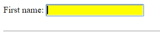
E:checked
E:checked偽類選擇器選擇表單中被選中的
radio或checkbox元素。假設在註用戶的頁面上，有一個復選框和同意註冊的文本：1
2<input type="checkbox" value="1"></input><label>我已經同意閱讀并同意網站註冊條款</label>
<hr>以下規則為選中的單選按鈕或復選框緊鄰的label元素添加樣式：
1
2
3input:checked+label {
color: green;
}當用戶選中復選框後，緊鄰復選框的label元素中的文本將變成綠色，運行結果如下
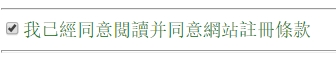
E:enabled/E:disenabled
E:enabled偽類選擇器選擇處於可用狀態的元素，E:disenabled偽類選擇器選擇處於不可用狀態的元素。假設頁面上有兩個元素，一個可用，一個不可用：
1
2
3
4<label>enabled:</label><input type="text">
<br><br>
<label>disabled:</label><input type="text" disabled>
<hr>就可以針對元素的可用、不可用狀態，應用不同的樣式，如對不可用的元素，可以禁用鼠標，并設置灰色背景和邊框：
1
2
3
4
5
6
7
8
9
10
11
12input[type="text"] {
widows: 200px;
height: 20px;
background: #fff;
border: 3px solid #cbcbcb;
}
input[type="text"]:disabled {
cursor: not-allowed;
background: #eee;
border-color: #ddd;
}運行結果如下
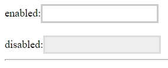
如果一個表單元素經常在可用和不可用狀態之𫂾進行切換，通常將這兩個選擇器結合使用，來變變元素的樣式，增加表單的易用性。
E:valid/E:invalid
E:valid偽類選擇器選擇輸入數據有效的元素，E:invalid偽類選擇器選擇輸入數據無效的元素，如對於𫉬得焦點的email輸入框，就可以根據用戶的輸入是否為有效的郵箱地址，來應用不同的樣式：
1
2<label>E-Mail：</label><input type="email" name="email">
<hr>此時，就可以根據用戶的輸入，來應用不同的樣式。如果輸入有效的郵箱地址，文本框的邊框顏色為綠色，如果輸入無效的郵箱地址，文本框的邊框顏色為紅色：
1
2
3
4
5
6
7input[type="email"]:focus:valid {
border: 3px solid green;
}
input[type="email"]:focus:invalid {
border: 3px solid red;
}這樣的話，在頁面初始加載時，由於用戶還沒有輸入郵箱地址，所以一定是非法值，文本框就會顯示紅色警示邊框，運行結果如下
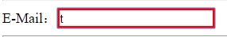
隨著用戶不斷輸入，當郵箱地址合法的時候，文本框就會由紅色邊框，自動變成安全的綠色邊框。運行結果如下
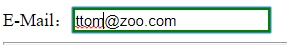
E:in-range/E:out-of-range
E:in-range偽類選擇器選擇輸入數據在有效範圍的元素，E:out-of-range偽類選擇器選擇輸入數據超出有效範圍的元素。如對於input類型為number的文本輸入框，其輸入的值必須在min和max的範圍內。
1
2<label>請輸入數字（0～10）：</label><input type="number" min=0 max=10>
<hr>此時，就可以根據用戶的輸入，來應用不同的樣式。如果輸入的數值未超出範圍，文本框的邊框顏色為綠色，一旦輸入的數直超出範圍，文本框的邊框顏色就變為紅色：
1
2
3
4
5
6
7input[type="number"]:focus:in-range {
border: 3px solid green;
}
input[type="number"]:focus:out-of-range {
border: 3px solid red;
}這樣的話，在用戶輸入數值的過程中，當輸入的數值在有效範圍內，文本框就是安全的綠色邊框。運行結果如下圖
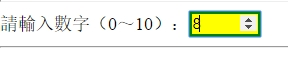
隨著用戶不斷輸入，當輸入的數值超出有效範圍時，文本框就會由安全的綠色邊框，自動變成紅色警示邊框，運行結果如下圖
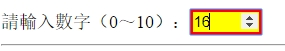
3 字體和文本
文本永遠是網頁中不可缺的元素，在Web應用中，設炔字體和文本樣式是CSS的最基本要求，字體的基本樣式包括字體、大小、粗細、傾斜等，文本的基本樣式包括文本縮進、對齊方式、行高、字符間距、單詞間距等。
隨著CSS3的出現，為字體和文本功能添加了一些高級樣式屬性，如字體拉伸、字體調整、文本陰影、文本自動換行、釀單調自動換行、文本溢出等。
本章內容：
- 字體
- 文本
3.1 字體
CSS規範清楚的認識到，字體選擇是一個常見而且很動要的特性，所以設置字體的屬性就是樣式表中最常見的用途之一。
字體相關的屬性在CSS1就已經定義，CSS3又新增了font-stretch和font-size-adjust這兩個屬性。
人們早已認識到字體選擇很重要，并在CSS2就支持可下載字體，也定義了＠font-face相關屬性，但是并沒有得到瀏覽器廣泛支持。直到CSS3，瀏覽器才開始支持＠font-face，使設計師可以在網頁中使用自己喜歡的任意字體。
3.1.1 字體系列
在CSS中，通過font-family屬性來指定文本所使用的字體系列。語法格式為：
1 | font-family: [<family-name> | <generic-family> # |
其中，family-name為字體系列的名稱：generic-family為通用字體系列的名稱。也就是說，font-family屬性的值既可以是具體的字體系列的名稱，也可以是通用字體系列的名稱。
CSS定義了5種通用字體系列，分別是serif、sans-serif、cursive、fantasy、monspace、font-family屬性可用使用其中的任何一種。如果希望文檔使用一種通用字體系列中的某個字體，但并不關心是哪一種具體的字體，使用通用字體系列就比較合適合。如
1 | body{ |
這樣，瀏覽器就會從sans-serif字體系列中選擇一種字體，并將它應用到body元素。由於font-family屬性具有繼承性，這種字體將會應用到body元素中的所有元素，除非有一種更特殊的選擇器將其覆蓋。
選擇字體時，要盡量選擇能夠引人注目（特別是標題）并且容易閱讀的字體。當然，設計師也可以選擇使用特定的字體。假如設計師希望所有h1標是都使用Georgia字體，可以使用以下聲明：
1 | h1{ |
這會使瀏覽器所有h1標題都使用Georgia字體。當然，這個規則是假設訪問都的計算機上已經安裝了該字體。并且，設計師總是希望使用任何想要的字體，遺憾的是，如果訪問者的計算機上沒有安裝該字體，瀏覽器更會使用默認字體來顯示h1標題。
不過，不必萬念俱灰，通過結合特定體和通用字體系列，可以創建與你預想相同的文檔。可以使用以下規則，告訴瀏覽器使用Georgia字䯇（如果可用），如果Georgia字體可可用，就使用另外一種serif字體：
1 | h1{ |
這時，如果訪問者的計算機上沒有安裝Georgia字體，但安裝了Times字體，瀏覽器就會使用Times。儘管Times與Georigia并不完全匹配，但至少足夠接近。
出於這個原因，強烈建議在所有font-family規則中，都提供一個通用字體系列。這樣一來，就是供了一條後路。
如果你對字體很熟悉，也可以在font-family屬性中指定想要的字體，并按優先順序依次排列，中間用逗號分隔。如
1 | body { |
瀏覽會根據這個列表，按順序查找這些字體，如果訪問都的計算機上安裝了第一種字體，就可以正確顯示。如果沒有安裝第一種字體，就自動切換到第二種，第三種字體，以此類推。如果所有字體都沒有找到，就會從sans-serif字體系列中選擇一種可用的字體。
利用這個特性，還可以實現英文和中文使用不同字體的效果，通常的做法是，把英文字體寫在前面，中文字體寫在後面。如
1 | p { |
這樣，瀏覽器會優先使用Arial字體顯示文本，由於中文字符不識別Arial字體，就會在後面的字體中繼續查找，找到Microsoft Yahei字體後，便對中文應用該字體，這樣，就達到了中文和英文使用不同字體的效果。
在指定字體時，如果字體名稠中包含空格或中文或其他特殊字符，則要匙整個字體名稱戶在引號中，可以使用單引號，也可以使用雙引號，并且字體名稱不區分大小寫。
對於中文，有三種指定字體的方法：一種是直托使用中文字體名稱，一種是使用英文字體名稱，一種是使用字體的unicode碼。但是，在CSS文柣中定義字體時，如果直接書寫中文，經常會出現亂碼，或者在某些瀏覽器下字體不生效。一估常用的解決方法，是匙中文字體名稱轉換為對應的英文字體名稱或unicode碼。如宋體的英文字體名稱為SimSun、unicode碼為\5B8B\4F53，則可以寫成：
1 | p { |
也可寫成：
1 | p { |
上述兩種寫法是等價的，可以自選擇。為了方便查閱，幾種常用字體的中文名稱、英文名稱、unicode碼的對照關系如下表
| 中文名稱 | 英文名稱 | unicode |
|---|---|---|
| 新細明體 | PMingLiU | \65B0\7EC6\660E\4F53 |
| 細明體 | MingLiU | \7EC6\660E\4F53 |
| 標楷體 | DFKai-SB | \6807 \6977\4F53 |
| 黑體 | SimHei | \9ED1\4F53 |
| 宋體 | SimSun | \5B8B\4F53 |
| 新宋體 | NSimSun | \65B0\5B8B\4F53 |
| 仿宋 | FangSong | \4EFF\5B8B |
| 楷體 | KaiTi | \6977\4F53 |
| 仿宋_GB23122 | FangSong_GB2312 | \4EFF\5B8B_GB2312 |
| 楷體_GB2312 | KaiTi_GB2312 | \6977\4F53_GB2312 |
| 微軟正黑體 | Microsoft JhengHei | \5FAE\x8F6F\6B63\9ED1\4F53 |
| 微軟雅黑 | Microsoft YaHei | \5FAE\8F6F\96C5\9ED1 |
| 華文細黑 | STXihei | \534E\6587\7EC6\9ED1 |
| 華文楷體 | STKaiti | \534E\6587\6977\4F53 |
| 華文宋體 | STSong | \534E\6587\5B8B\4F53 |
| 華文仿宋 | STFangsong | \534E\6587\4EFF\5B8B |
| 麗黑 | ProLiHei Pro Medium | \4E3D\9ED1 Pro |
| 麗𢪮 | ProLiSong Pro Light | \4E3D\5B8B Pro |
| 隸書 | LiSu | \96B6\4E66 |
| 幼圓 | YouYuan | \5E7C\5706 |
| 華文中宋 | STZhongsong | \534E\6587\4E2D\5B8B |
| 方正舒體 | FZShuTi | \65B9\6B63\8212\4F53 |
| 方正姚體 | FZYaoti | \65B9 \6B63\59DA\4F53 |
| 華文彩雲 | STCaiyun | \534E\6587\5F69\4E91 |
| 華文琥珀 | STHupo | \534E\6587\7425\73C0 |
| 華文隸書 | STLiti | \534E\6587\96B6\4E66 |
| 華文行楷 | STXingkai | \534E\6587\884C\6977 |
| 華文新魏 | STXinwei | \534E\6587\65B0\9B4F |
雖然CSS提供了備選字體的機制，但是在CSS3之前，所有的字體都只能是Web安全字體（即預先安裝在主流個人計算機操作系統中的字體的子集）。直到CSS3中＠font-face的出現，這個問題才徹底得到解決。
說明：
雖然font-family屬性具有繼承性，但有幾個元素不會繼承父元素的字體設置，其中有表單的select、textarea和input元素。不過可以強制它們繼承父素的字體設置。代碼如下：
1 | input, select textarea { |
3.1.2 字體大小
在CSS中，通過font-size屬性來設置元素中所包含文本的字體大小。如果一個元素沒有顯示定義，則會自動繼承父元素的font-size屬性的計算結果。
定義font-size時，可以使用預定𣯑鍵字、絕對尺寸、相對尺寸：
預定義關鍵字
預定義關鍵字有xx-small、x-small、small、medum、large、x-large、xx-large，尺寸按順序依次增大，類似於衣服的尺寸。
使用頂定義關錄字有兩大缺陷：一是只有7種選擇，可選擇範圍太小：二是跟衣服的尺寸一樣，不同廠商對每個關鍵字對應的字體大小的精確值可能各不相同，導致在不同瀏覽器下，文本的大小可能不同。因此，不推薦使用預定關鍵字來定義字體的大小。
絕對尺寸
絕對尺寸有px（像素）、pt（點，1pt相當於1/72in）、in（英寸）、cm（厘米）、mm（毫米）等。如
1
2
3
4
5
6
7
8
9
10
11
12
13
14
15.px {
font-size: 14px;
}
.pt {
font-size: 10pt;
}
.in {
font-size: .15inp
}
.cm {
font-size: .4cm;
}
.mm {
font-size: 4mm;
}1
2
3
4
5
6
7<body>
<p class="px">字體大小: 14px</p>
<p class="pt">字體大小: 10pt</p>
<p class="in">字體大小: .15in</p>
<p class="cm">字體大小: .4cm</p>
<p class="mm">字體大小: 4mm</p>
</body>上述代碼定義了5種字體大小，都使用絕對單位。使用絕對長度單位後，在固定分辨率的顯示器下，顯示出來的都是固定大小。運行結果如下圖
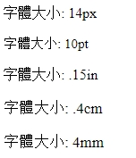
如果以px為單位設置字體大小，使用IE瀏覽器的用戶，就不能在瀏覽器上通過設置“文字大小”來對文本進行放大或縮小。如果文本太小就會影響閱讀，使用戶體驗大打折扣。
相對尺寸
相對尺寸有em、%、rem，它們都是相對於某個參考基准的字體大小，來計算當前字體的大小，只是參考基准不同而已。
em的參考基准是父元素。那麼，如何計算要指定的em值呢？實際上，1em總是等於父元素font-size屬性的值，這就是em的工作原理。據此，可以通過以下公式來確定百分比的值：
目標元素的字體大小/父元素的字體大小=值
因此，在使用em定義字體大小時，最好在html或body元素上建立一個基准。假設在body中設置的基准大小為12px：
1
2
3body {
font-size: 12px;
}如果希望body中所有段落的字體大小為18px，根據上述公式：
18 / 12 = 1.5
因此，只需將段落的font-size設置為1.5em就可以了，這條規則就表示沒落文本的字體大小為父元素文本大小的1.5倍：
1
2
3body p {
font-size: 1.5em;
}%的參考基准也是父元素，100％也總是等於父元素font-size屬性的值，即1em就等於100％。也就是說，在用％定義字體大小時，只需將em的值換算成相應的百分數即可。因此，以下兩條聲明會得到相同的結果（假設兩個段落具有相同的父元素）：
1
2
3
4
5
6p.one{
font-size: 1.5em;
}
p.one {
font-size: 150%;
}需要注意的是，盡管font-size是可以繼承的，但在使用％和em定義字體大小時，子元素繼承的是計算結果的值，而不是％和em的數字，并且，％和em還可以累積，考慮以下代碼：
1
2
3
4
5
6
7
8
9p {
font-size: 12px;
}
em {
font-size: 200%;
}
strong {
font-size: 200%;
}1
<p>12px <em>200% <strong>200%</strong></em></p>
上述代碼中，p為父元素，em為p的子元素，strong為em的子元素。em元素的基准是p元素，而strong元素的基准是em元素，計算結果如下：
em: 12 x 200% = 24px;
strong: 24 x 200% = 48px;
得到的運行結果如下圖
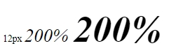
在這種多層嵌套的情況下，如果某一個計算結果不是整數，瀏𠝀器可能就會取整，子元素再繼承取整後的值。如果嵌套很深，下層的字體大小就越來越偏離實際計算值，并且，由於參考基准總是隨著元素發生變化，嵌套越深，計算起來也就越困難。
鑑於此，CSS3中新增的一固相對單位rem（root em的簡稱），它總是以文檔的根元素（即html元素）為參考基准，來設置其它元素的字體大小，即1rem相當於html元素font-szie屬性的值。考慮以下代碼：
1
2
3
4
5
6html {
font-size: 10px;
}
p {
font-size: 1.4rem;
}這樣一下，無論嵌套多少層，參考基准始終不變，計算字體大小就變得容易多了。不過而要注意的是，rem是CSS3新增的一個相對單位，IE9以下版本的老瀏覽器却不支持它，這也是很多編程人員尚未使用rem的原因。
在定義字體大小時，筆都建議在html元素中定義絕大多數元素所需要的字體大小，并讓所有子元素進承html的字體大小。如果某個子元素需要改變字體大小，則使用相對尺寸em或％或rem動新定義。
這樣做的好處是，一方面，絕大多數元素都不必定義體大小，減少不必要的定義；另一方面，如果完成所有的文字排版後，又要統一調整頁面文字大小，就可以只修改html中的字體大小，其它所有文字的字體大小會自動變化，修改起來就很容易。
說明：
在某些特殊埸景下，需要把font-size的值設置為0，來隱藏某些文本。但是，在IE6或IE7中，font-size:0的文本却變成了小黑點，并沒有完全隱藏。
解決這個問是的最簡單辦法，就是在font-size：0的同時，把text-index屬性設罝為一個很大的負值，讓這些文本顯示在屏幕之外，自然就被隱藏起來。
3.1.3 字體粗細
在CSS中，通過font-weight屬性用來設置字體的粗細值，取值為lignter | normal | bold | bolder，默認為normal。lighter為細體，normal為正常粗細，bold為粗體，bolder為特粗體。如：
1 | <style> |
1 | <body> |
上述代碼定義了4種不同粗細的字體，按順序依次變粗，運行結果如下所示
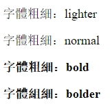
為了實現更細致的控制，CSS也允許使用數字來設置字體的粗細。數字必須是100的整數倍，取值在100～900之間，值越大字體越粗。400等同於normal，700等同於bold。不同取值的結果如下圖
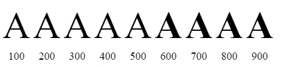
瀏覽器會自動為一些元素（如strong、h1～h6和b）添加粗體格式，有些元素還繼承了父元素粗體格式，可以通過font-weight:normal來取消這些元素的粗體格式。
3.1.4 字體風格
在CSS中，通過font-style屬性來設置文本的字體風格，可選值有normaol | oblique | italic，默認為normal。normal表示正常文本；oblique表示正常文本的傾斜版本；italic表示斜體，斜體是一種單獨的字體風格。如
1 | <style> |
1 | <body> |
上述代碼定義了三種不同的字體樣式，運行結果如下圖所示
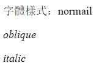
CSS規範規定，如果沒有italic字體，但有一種oblique字體，則要在需要italic的地方替為oblique，如果情況反過來，存在italic字體，但沒有oblique字體，則瀏覽器可以不進行替換。
但是從上個可以看出，使用oblique和italic的元素之間并沒有明顯示的區別，實際上，不是每一種字體都同時有斜體（italic）和傾斜字體（oblique），即更這兩種字體同時存在，也很少有瀏覽器如此費力的去區分它們。
3.1.5 字體變形
有時候，希望一篇文章中的英文單詞或英文字母，無論是小寫還是大寫，統一變成大寫，就可使用font-variant屬性實現。
font-variant屬性用來使英文字母變為小型大寫字母，可選值有normal | small-caps，默認值為normal。normal為正常的字體； small-caps讓字母變成小型大寫字母，這意味著所有的小寫字母均會被換為大寫，但字體更小。如
1 | <style> |
1 | <body> |
上述代碼定義了2個段落，第一個段落文本正常顯示，第二個段落文本變為大寫并縮小顯示。運行結果如下圖所示：
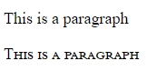
從上圖可以看出，font-variant屬性只把段落中的小寫字母變為大寫，并縮小顯示，而段落中的大寫字母依然保持原樣，沒有進行轉換。這樣一來，轉換出來的大寫字母，比實際的大寫字器尺寸要小，顯得不太協調，所以，在轉換對象中，建議不要包含大寫字母。
3.1.6 字體拉伸
font-stretch屬性用來將字體在水平方向上進行拉伸或壓縮，讓一種字體的字符更寬或更窄。如果水平壓縮，則字體變窄，如果水平拉伸，則字體變寬。
就像font-size屬性的預定義關鍵字（如xx-large）一樣，該屬性也有一系列預定義關鍵字，𫍇些關鍵字可以是nornal、或condensed、或expanded，默認值為normal，表示不進行拉伸或壓縮。
1 | <style> |
1 | <body> |
這些關鍵字的值按照以下順序，字體依次由窄到寬：ultra-condensed、extra-condensed、condensed、semi-condensed、normal、semi-expanded、expanded、extra-expanded、ultra-expanded，拉伸或壓縮的效果如下圖所示
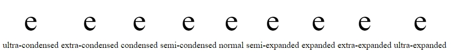
3.1.7 字體調整
設計師也會經常遇到一種情況，就是精心設計好的頁面，如果改變字體的種類，頁面上使用該字體的文本尺寸將發生變化，從而導致原來安排好的頁面產生混亂，這是設計者不願意看到的結果。
一種字體的x-height（即，小寫字母x的高度）與font-size高度的比值，稱作該字體的aspect值，它決定了文本的顯示尺寸。
在相同的font-size取值下，字體擁有的aspect值越大，文本的顯示尺寸就越大，就越容易閱讀。
如，Verdana字體的aspect值是0.58，Times字體的aspect值是0.46，也就是說，當font-size為100px時，Verdana字體的x-height是58px，而Times字體的x-height是46px，這就意味著Verdana字體比Times字體更易閱讀。
在指定字體時，出於安全考慮，人們通常會為一個元素指定多種字體，希望當首選字體不可用時，讓瀏覽器自動使用備選字體。
如以下樣式Verdana字體作為段落的首選字體，當Verdana字體不可用時，則使用Georgia字體，當Georgia字體不可用時，則使用Times字體：
1 | p{ |
由於Georgia和Times字體比Verdana字體的aspect值要小，當使用備選字體時，必然會影響文本的易讀性，甚至導致頁面布局產生混亂。
為了避免這種情況，在CSS3中，新增加丁font-size-adjust屬性。目前，僅得到Firefox瀏覽器的支持。
實際應用中，只需把font-size-adjust屬性的值，設置為首選字體的aspect值，磺可以保証使用備選字體後，文本的顯示尺寸不發生變化。
設置font-size-adjust屬性後，瀏覽器將不再使用所設置的font-size屬性的值來顯示文本，而是根據font-size-adjust屬性、font-size屬性的值，及備選字體的aspect值，重新計算文本的font-size值，并用這個計算值來顯示文本。計算公式如下：
1 | c = ( a / a') s |
其中：
c = 實際使用的font-size值
a = font-size-adjust屬性的值，即首選字體的aspect值
a’ = font-size 屬性的值
也就是說，假設首選字體Verdana不可用時，瀏覽器將使用Times字體，只需為使用Times字體的元素設置font-size-adjust屬性，并設置為首選字體的aspect值，就可以保証使用備選字體後，文本的顯示尺寸不發生變化：
1 | p { |
設置font-size-adjust屬性後，在渲染頁面時，瀏覽器將執行以下步驟，來計算備選字體實際所使用的font-size值：
查得font-size-adjust屬性的值為0.58。
查得備選字體Times的aspect值為0.48。
將0.58除以0.46，得到近似值1.26。
再將100乘以1.26，得到font-size的計算值126px。
然後，瀏覽器將使用font-size的計算值126px來顯示備選字體，也就是說，100px的Verdana字體跟126px的Times字體的顯示尺寸相當。
除了讓備選字體和首選字體具有相同的顯示尺寸外，還有一種情況，就當兩種字體并存具都可用時，也可以通過font-size-adjust屬性，𧭰它們具有相同的顯示尺寸。
假設在一個段落有兩個span元素，為了方便對比，在每個span元素中包含一個小寫字母
b:`
1 | <body> |
兩個span元素的字體大小都是100px，而它們使用的字體不同，第一個span元素使用Verdana字體，第二個span元素使用Times字體：
1 | <style> |
上述代碼的運行結果如下
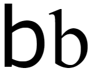
從上圖可以看出，即便使用相同的font-size，由於font-family的不同，文本在瀏覽器中的顯示尺寸也會不同，右側Times字體的文本，顯然比左側Verdana字體的文本要小。
同理，可以把一個元素的font-size-adjust屬性，設置為期望字體的aspect值，就可以保証它和期望字體具有相同的顯示尺寸。
如希第二個span元素中文本，與第一個span元素中文本的顯示尺寸相同，就要把第二個元素的font-size-adjust屬性，設置為Verdana字體aspect值：(這只在Firefox有效)
1 | div>p { |
1 | <div> |
運行結果如下
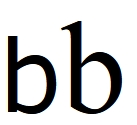
3.1.8 @font-face
多年以來，人們一直被迫使用一組單調乏味的Web安全字體。當網頁中需要使用一些優雅的字體時，設計師最常用的辨法，就是把文字做成圖片。但是，由於圖片難以修改，也利於網站SEO，因此不可能大範圍使用該字體。
值得慶幸的是，CSS3的＠font-face為設計師打開了一個全新的世界，它提供了一種自義網頁字體的方法，使設計倆可以大膽使用任意自己想要的字體。
事實上，＠font-face規則在CSS2中就已經存在，但隨後在CSS2.1中被刪除。真的，不騙你，早在1998年，IE4就對它提供了部分支持。現在，它又回來了，已經被重新引入到CSS3的字體模塊中！
＠font-face是一個CSS功能，它允許網頁中使用們定義的網絡字體，這些自定義的字體被置在服務器上，從而擺脫對訪問者計算機上字體環境的依賴。
簡單的說，有了＠font-face，只需將字體上傳到服務器端，無論訪問者計算機上是否安裝該字體，網頁都能夠正確的顯示。
＠font-face能夠讓加載服務器端的字體，并讓瀏覽器找到對應的字體，得益於一套成熟的語法規則：
1 | @font-face { |
其中，font-family屬性用來指定網絡字體的名稱，它可以是依懬的字符串，建議最好使用字體本身的名稱。font-*屬性分別表示該網絡字體的風格和粗細。source屬性用來指定網絡字體文件的存放路徑，可以是相對路徑或絕對路徑；format屬性用來指定網絡字體的格式字符串，不同格式字符對應的字體格式和後綴名見下表
| 格式字符串 | 字體格式 | 後綴名 |
|---|---|---|
| “woff” | WOFF格式 | .woff |
| “truetype” | TrueType格式 | .tff |
| “opentype” | OpenType格式 | .ttf,.otf |
| “embedded-opentype” | Embedded OpenType格式 | .eot |
| “svg” | SVG Font格式 | .svg, svgz |
要在網頁中使用自定義的網絡字體，必須先將字體文件上傳到服務器的某地方，然後，再使用＠font-face規則定義網絡字體。
字義網絡字體時，font-family和src都是必需的屬性，通過font-familh指字字𢐗的名稱，通過src指定字體資源文件的存放路徑：
1 | @font-face { |
上述代碼定義了一個網絡字體，字體名稱為DroidSands，字體文件為DroidSans.woff，并與CSS文件保存在相同目錄中。
不過，這里定義的字體并不會有依何實際效果，因為還沒有真正將它應用到網頁中。要將網絡字體DroidSans應用到網頁中，還需在CSS選擇器中，將font-family屬性的值設為＠font-face規則中定義的字體名稱。如
1 | h1 { |
定義網絡字體後，頁面上依何引用該字體的元素，都將按該規則來渲染文本。因此，頁面上的所有h1標題，都將使用自定義的DroidSans字體進行渲染。并且，對於h1標題，瀏覽器默譇還會使用粗體顯示。
然而，此時呈現的粗體，并不是真正的粗體，而是偽粗體，這是因為一個網絡字體文件只對應一種風格、一種粗細。因此，要使用真正的粗體，還需要單獨創建一個＠font-face規則，在該規則中對font-family進行重命名。并提供粗體對應的字體文件，同時將font-weight屬性設置為bold:
1 | @font-face { |
同理，如果要使用斜體加粗體，還要單獨創建另一個＠font-face規則，并提供粗斜體對應的字體文件，同時將font-style屬性設置為italic，font-weight屬性設置為bold。當然，如果某種Web字體沒有粗體、斜體或粗斜體版本，而我們又對文本添加了這些樣式，瀏覽器就會顯示偽樣式。
3.2 文本
CSS提供了許多強有力的文本格式化工具，可以用來設定字體、顏色、字號、行距等，它還有許多其它屬性，可以給標題、列表、段落等添加視覺效果。
3.2.1 文本縮進
在CSS中，使用text-indent屬性，可以讓元素第一行縮進一個給定的寬度，可能是最常見的文本格式化效果。諾法格式為：
1 | text-indent: <length> | <pecentage> |
也就是說，可以使用長度值或百分比來設置文本縮進，長度值可以使用絕對單位或相對單位。當使用相對單位em時，縮進的的寬度為字符寬度的倍數，字符寬度根據當前元素的font-size屬性計算得到。
當然，這個屬性最常見的用途，是讓段落的首行縮進的一個給定的寬度，如，以下規則會使所有段段落的首行縮進2個字符的寬度：
1 | p { |
當使用百分比時，縮進寬度根據元素父元素的寬度計算得到。換句話說，如果將縮進值設罝為20％，則所影響元素的第一行會縮進其父元素寬度的20％。
不過，在使用百分比時，需要注意的是，text-indent屬性具有繼承性，而子元素繼承的是text-indent屬性的計算結果，而不是百分比的值。考慮如下代碼：
1 | <body> |
1 | <style> |
上述代碼中，article元素的寬度為500px，并設置文本縮進為10％。根據繼承性，p元素會繼承article元素的text-indent屬性。運行結果如下圖
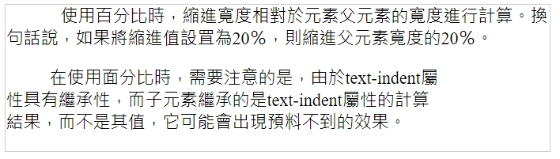
從上圖可以看出，子元素p與父元素article的文本縮進寬度相同，因為子元素繼承的是text-indent屬性的計算結果50px，而不是百分比的值10％。
除了使用正值產生縮進效果外，還可以把text-indent屬性設置為負值，來實現一些很有用的效果，比如懸挂縮進的效果：
1 | p { |
上述規則會使所有段落的首行懸挂縮進2個字符的寬度，當然，有時候，希望文本不可見，也可以使用text-indent屬性把文本顯示到屏幕之外。
不過，在為text-indent屬性設置負值時要當心，如果對段落設置了負縮進，那麼首行的某些文本可能會超出窗口的左邊界，為了避免出現這種問題，建議針對負縮進再設置適當的外邊距或內邊距。
注意
一般來說，可以為所有塊級元素應用text-indent屬性，但無法將該屬性應用於行內元素，及圖像之類替換元素。但是，如果一個塊級元素的首行中有一個圖像，圖像也會隨該行的其餘文本而移動。
3.2.2 水平對齊
在一個塊級容器中，當一行中的行內級框的總寬度，小於容器的寬度時，通過text-align屬性來指定這些行內級杇在行中的水平分布。
事實上，text-align屬性是通過指定行框與哪個點對齊，來決定行內級框在行中如何進行水平分布。可選值有let|cneter|right|justify|start|end，默認值為start。不同取值的含義見下表
| 屬性值 | 含義 |
|---|---|
| left | 左對齊，所有行內級框的左邊緣與容器的左邊綠重合 |
| center | 居中對齊，所有行內級框的中線與容器的中線重合 |
| right | 右對齊，所有行內級框的右邊綠與容器的右邊綠重合 |
| justify | 兩端對齊，所有行內級框的左右兩端都在容器的內容邊界上 |
| start | 起始邊界對齊，所有行內級框的起始邊綠與容器的起始邊緣重合 |
| end | 結束邊界對齊，所有行內級框的結束邊綠與容器的結束邊緣重合 |
當取值為start和end時，對齊的位置跟文本流的書寫方向有關，書寫方向不同，其對齊的位置也不同。對於從左到右的內容，start和left等價，end和right等價；對於從右到左的內容，start和right等價，end和left等價。大多數情況下，文本流的默認書方向為從左到右，而希伯來語和阿拉伯語等的默認書寫方向為從右到左。
text-align屬性只能應用於塊級元素，它的最典型應用，𧚱是指定段落中每一行內容的水平對齊方式。
段落是一個塊級容器，容器中的每一行內容都會生成一個行框，𧚱可以把段落看做是這些行框的塊疊。由於并非每一行的內容都能填滿容器的寬度，因此，𧚱可以通過text-align屬性，來指定每一行中內容的水平對齊方式。假設有四個段落，代碼如下：
1 | <body> |
為了便於觀察，把段落的文本顯示包含在行內元素span中，通過限制p元素的寬度，使文本在兩行官顯示，并為span元素添加背景，為p添加邊框：
1 | <style> |
為上述段落應用不同的text-align屬性值，讓第一個段落左對齊，第二個段落居中對齊，第三個段落右對齊，第四個段落兩端對齊：
1 | <style> |
得到的運行結果如下圖所示
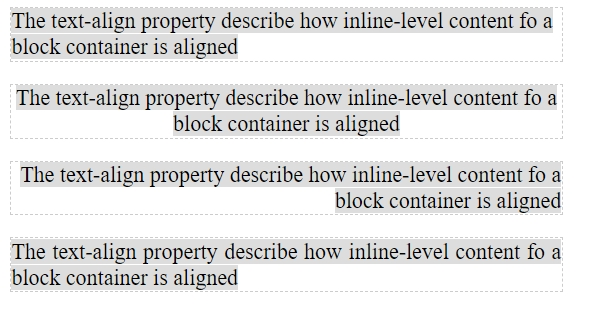
從上圖可以看出，并不是每一個文本行都到達容器內容區的邊界。對於左對齊的段落，每一行的左邊綠，都與容器內容區的左邊界對齊，空白分布在容器的右側，右對齊則恰好相反。居中的段落，文本行的中心與容器的中心對齊，空白在容器的左右兩側均匀分布。取值justify時，每一個文本行左右兩端在容器的內邊界上， 沒有空白。
text-align:justify是通過調整單詞或字符間距，使各行的長度恰好相等，來實現兩端對齊，由於text-align:justify對最後一行文本無效，因此，對單行文本也無效。
3.2.3 水平對齊
text-align-last屬性用於定義塊級容器中，行內元素的最後一行內容的水平對齊方式，可選值有auto | left | center | right | justify | star | end，默認值為auto。
除了auto外，其它取值與text-align屬性取值的含義相同。auto表示使用text-align的設定（例外情況，text-align取值為justify時，text-align-last屬性的值為start）。
繼續上一節的例子，現在讓最後一行文本居中對齊，其他文本行右對齊：
1 | <style> |
1 | <body> |
運行結果如下
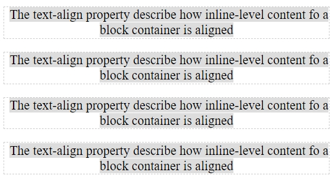
3.2.4 行高
在CSS中，通過line-height屬性來定義行高，行高是指相鄰兩行文本基線之間的垂直距離。
那什麼是基線呢？對任何一個行內非替換元素，其內容區都會存在四條假想的線，分別是底線（bottom）、基線（baseline）、中線（middle）、項線（top），它們就類似於書寫英文時的四線三格，如下圖所示
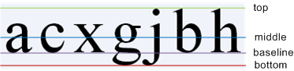
僅管在字體大小發生改變時，這些線相互之間的距離也會隨之改變，但無論如何，這四條線的位置確定的。底線就是g、j、y等字母的底邊線，基線就是a、c、x等字母的底邊線。中線是小寫字母x垂直中線（即基𨒖往上0.5ex的位置），項線是 b、h、j等字母的頂邊線。
如果在一個塊級元素上聲明line-height值，這個值將會應用到塊中的所有內容，而不論內容是否包含在行內元素中，即對匿名行卷框也依然有效。所以，常常為一個段落元素聲明line-height值，來指定段落每行文本的行高。
由於line-height屬性具有繼承性，因此，可以只在父元素中定義line-height規則，而不必在所有子元素中顯示地聲明line-height。
line-height屬性可以用百分比、長度值、數值進行定義，其值可以是正值，也可以是負值：
百分比：根據元素本身的font-size計算值的百分比計算行高。如段落的line-height屬性值為200％，段落元素的font-size為14px，則行砲為2000％*14px = 28px。
長度值：設置固定的行高，可以使用絕對單位或相對單位。若使用相對單位em，則根據元素本身的font-size計算值的倍數計算行高。如段落的line-height屬性值為2em，段落元素的font-size為14px，則行高為200％*14px=28px。
數值：根據元素本身的font-size計算值的倍數計算行高，如段落的line-height屬性值為2，段落元素的font-size為14px，則行高為2*14px=28px。
當使用百分比或長度單位時，子元素繼承的是計算出來的行高的值，這就導致子元素為法根據自紙的font-size自動調整行高，當子元素使用的字號比父元素大時，子元素可能出現文本重疊現象，故這種方法將被淘汰。
使用數值時，僅管子元素也會繼承，但繼承的是該數值本紙，而不是計算出來的行高，這樣一來，子元素就可以根據自紙的font-size來調整行高，不會出現文本動疊現象，所以，使用數字，是設置行高最理想的方法。
無論使用百分比、長度值、數值中的哪種方式，都可以在font屬性中，使用縮寫𤆧式來定義line-height，其寫法是line-height的值緊跟在字體大小和一個斜槓後面。如
1
2
3body {
font: 14px/2 arial;
}上述寫法就等價於：
1
2
3
4
5body {
font-size: 14px;
line-height: 2;
font-family: arial;
}根據CSS規範，line-height屬性只會影響行內元素，而不會直接影響塊級元素，即卻會影響塊框的布局，在塊級元素上聲明line-height屬性，是為該塊級元素中的行內框設置一個最小行高，而不是實際行高。
3.2.5 垂直對齊
在CSS中，行框的高度總是足以容納它包含的所有行內級框，當一個行內級框B的高度小於包含它的行框高度時，則由vertical-align屬性來決定B在行框中垂直對齊的位置。因此，vertical-align屬性只對行內級元素有效，對塊級元素無效。并且，該屬性不能被子元素繼承。
在垂直對齊時，行內非替換元素的行內級框是由line-height的高度定義的框，即在內容區的上下各添加半行距後的框； 其他行內級元素的行內級框是由margin-box定義的框。因此，對一個行內級框來說，top是指框的上邊界，bottom是指框的下邊界，text-top是指內容區的上邊界，text-bottom是指內容區的下邊界。
由於替換元素沒有baseline，因此，就把它的bottom作為baseline，即baseline和bottom的位置相同。
middle是指框高度一半的位置，對於替換元素，就是height的一半的位置，而非替換元素則是基於baseline往上移動0.5ex，即小寫字母x的正中心。但是，很多瀏覽器往往把ex這個單位定義為0.5em，導致middle其實不一定是x的正中心，如下圖所示
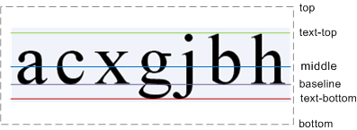
vertical-align屬性可以使用長度值、百分比或預定義關鍵字，來定義行內級框的垂直對齊方式。該屬性的默認值是baseline，也就是說，默認情況下，所有行內級框的基線都與父元素的基線對齊。
使用長度值和百分比時，通過讓行內級框的基線相對父素的基線，升高或降低指定的距離，來決定行內級框在行框中的位置。距離可以是正值，也可以是負值。正值使行內級框相對父元素的基線升高，負值則降低。
使用長度值時，可以使用絕對單位或相對單位，來指定升高或降低的距離，0cm等同於baseline。假設在一個段落中，包含一個span元素：
1 | <body> |
假設設置段落的字體大小為120px，span元素的字體大小為40px、vertival-align的值為20px：
1 | <style> |
由於vertical-align的值為20px，所以，行內框span的基線相對父元素的基線升高20px。運行果如下圖所示
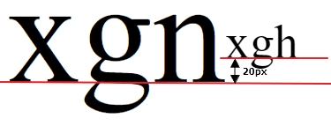
使用百分比時，升高或降低的距離是根據行內元素的line-height進行計算，0％等同於baseline。
如果把span元素的line-height設置為1，vertical-align設置為50％，則得到的行高為40px，進而得到升高的距氶為50％*40px=20px，也會得到相角的效果。
1 | span { |
使用預定義關鍵字時，是根據預定義的對齊准則，來決定行內級框在行框中的位置。預定義關鍵字有baseline | sub | super | top | text-top | middle | bottom | text-bottom，默認值為baseline。框據W3C規範，不同取值的含義見下表
| 屬性值 | 含義 |
|---|---|
| baselne | 基線對齊。行內框的基線與父元素的基線對齊 |
| sub | 下標對齊。將行內框的基線下降到父元素適合下標的位置 |
| super | 上標對齊。將𢓝內框的基線上升到父元素適合下標的位置 |
| top | 頂部對齊。行內框的頂線與行框的頂線對齊。 |
| text-top | 文本頂部對齊。行內框的頂線與父元素的text-top對齊 |
| middle | 居中對齊。行內根的中線與父元素的中線對齊 |
| bottom | 底部對齊，行內框的底線與行框的底線對齊 |
| text-bottom | 文本底部對齊，行內框的底線與父元素的text-bottom對齊 |
基線對齊要求一個行內級框的基線與行框的基線對齊，而對於圖像和表單輸入元素和其他替換元素，由於它們本身沒有基線，則將它們的底線與行框的基線對齊，這就使得瀏覽器總把替換元素的底線放在基線上，即便該行中沒有其文本。
上標對齊和下標對齊時，是行內元素的基線（圖片和文本輸入框的底線）相對於行框的基線上移或下移，而行內元素基線相對於行框的基線移動的距離，CSS疊範中未明確規角，由瀏覽器自行決定，可能會因為瀏覽器的不同而不同。從上圖的運行結果看，在Google Chrome瀏覽器下，移動的距離約為1ex。
middle居中對齊，是行內元素的中線與行框的中線對齊，前面已經介紹，元素的中線與基線的距離為小寫字母x高度（即ex）的一半，而大部分瀏器簡單的認為1ex=1em，因此會將基線以下二分之一em處（其實不一定是x的正中心），作為文本的中線。前面已經介紹，一個框的高度是由line-height決定的，如果增加行高，框的高度會增加，頂線就會上移，底線會下移。無論底線下移多少，bottom對齊，始終是元素的底線與行框的底線對齊； top對齊，始終是元素的頂線與行框的頂線對齊。增加行砲時，行框的高度會增加。但內容區的高度始終保持不變，text-top對齊就是行內元素的頂線與行框文本的頂線對齊。
垂直對齊的預定關鍵字看似簡單，其實很難理解，處理起來也很棘手。下面通過一估簡單實例，來看看每個預定義關鍵字的效果。假設在一個段落中，有8個span元素：
1 | <p>xgn |
為段落定義1.8倍的行距，并讓每個子元素span以不同的𤆧式垂直對齊，由子元素span會繼承父元素的line-height屬性，因此，把span元素的行距重置為1：
1 | p { |
在Google Chrome瀏覽器下的運行效果如下圖所示
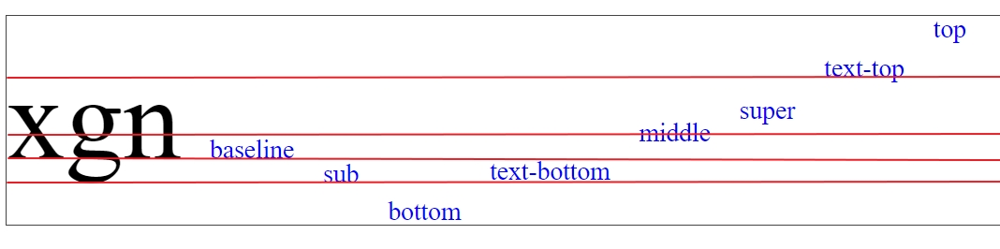
雖然W3C規範對vertical-align屬性已經定義非常清楚，然而，現實的情況是，不同瀏覽器的解䆁卻千差萬別，甚至與規範相報萬里，比如，在增加行高時，行框的高度會增加，text-top對齊將會是行內元素的頂線與行框文本的頂線對齊。但從運行結果看，并不是這個樣子，似乎是行內元素的基線與行框文本得頂線對齊。
在所所有的CSS屬性中，vertival-align屬性是最讓人費解的一個，因為幾乎在所有瀏覽器下的表現倱各不相同。
3.2.6 字符間距
letter-spacing屬性用來增加或減少字符或漢字之間的距離，默認值為0。該屬性接受一固正長度或負的長度值； 設置一個正長度時，字符之間的間隔會增加； 設置一個負一長度值時，字符之間的間隔會減少，讓字符擠得更緊，甚至出現重疊。
對於字數較少，卻又履突出表現的內容，如詩詞等，可以根據需要，增加適當的字符間距，讓內容稍微稀疏一點，會比較美觀。如對於下面這首古詩：
1 | <body> |
希望h1標題和正文的內容怖疏明朗，就可以使用letter-spacing屬性來實現。CSS代碼如下：
1 | <style> |
上述代碼運行結果如下圖所示
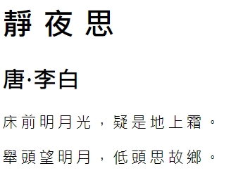
3.2.7 單詞間距
world-spacing屬性用來增加或減少單詞之間距離，默認值為0。該屬性接受一個正的長度值或負的長度值；設置一個正的長度值時，單詞之𫂾的間隔會增加； 設置一個負的長度值時，單詞之間的間隔減少，讓單詞擠得更緊，甚至出現重疊。
因為該屬性把由空白符包圍的一個字符串看作一個單詞，而漢字之間沒有空格，所以該屬對中文無效。但是，如果在漢字中人為添加空格，則會把空格前後的漢字按單詞處理，該屬性會生效。
要解決這個問題，可以人為在h1標題的漢字之間插入一個空格，再通過word-spacing屬性來調整單詞間距如
1 | <style> |
1 | <div style="border: 1px solid #ccc; width:300px;text-align: center;"> |
運行畫面如下：
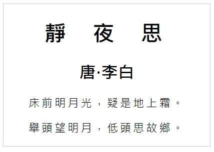
3.2.8 文本轉換
英文字母的大小寫轉換，是CSS提供的非常實用的功能之一，文本的大小寫轉換在空格處理之後進行。文本轉換對中文無效，因為中文不存在大小寫。
在CSS中，使用text-transform屬性來對文本進行大小寫轉換，取值為none | capitalize | uppercase | lowercase | full-width，默認為none。
none表示無轉探，保持原樣； captialize表示將每個單詞的首字母轉換成大寫，其它字符不變； uppercase表示將文本的所有字符轉換成大寫；lowercase表示將文本的所有字符轉換成小寫； full-eidth表非將所有字符轉換成全角形式（全角占兩個字節，半角占一個字節），如果字符沒有全角形式，將保持原樣，其典型用途是將拉丁字符及數字排版為表意字符形式。如：
假設使用text-transform屬性，定義了四種不同的文本轉換類型，如
1 | <style> |
把上述四種文本轉換類型，應用到特定的文本，即可實現相應的文本轉換特效。如
1 | <body> |
由於不同的瀏覽器，對單詞的理解可能不同。比如對文本“text-transform”，Google Chrom瀏覽器會把它整體看作一個單詞，而Firefox瀏覽器把它𢒆作是“text”和“transform”兩個單詞，中間用連字符連接。
因此，在text-transform屬性取值為capitalize時，在Google Chrome中得到的結果是“Text-Transform”，而Firefox中得到的結果是“Text-transform”。而CSS規範并沒有明確規定使用哪一種轉換方式，所以它們都是正確的結果。
此外，取值full-width是CSS3的新增的屬性值，目前僅得到Firefox瀏覽的支持。上述代碼在Firefox瀏覽器下的運行效果如下圖所示：
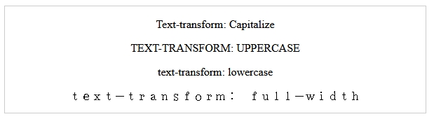
使用text-tranform屬性的好處是，如果你需要將哪些元素變成大寫，則無需修改元素的內容，只需使用CSS就可以完成。這也是CSS優越性的再一次體現。
3.2.9 文本裝飾
在CSS中，使用text-decoration屬性，可以在文本上方，下方，或中間添加裝飾線，可選值為none | underline | overline | line-through | blink ，默認值為none。none為裝飾，underline下劃線，overline上劃線，line-througn文字中間貫穿線，blink閃爍。裝飾線的顏色與文本的顏色相同。
默認情況下，文本都是沒有裝飾線的，但超鏈是個例外，它默認就帶有下劃線，當鼠標懸後，再添加下劃線，來提醒用戶當前文本為鏈接文本。如
1 | a { |
文本裝飾線的另一個常見用法，就是修訂文本，在被刪除文本上增加刪除線。還有團購網站，在原價上增加刪除線，做刪除狀，其實還可以使用text-decoration屬性，為文本同時添加多條裝飾線，如
1 | p { |
上述規則會為段落文本同時增加上劃線，下劃線和中間貫穿線。運行效果如下所示
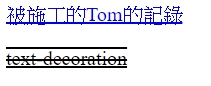
3.2.10 文本陰影
在CSS3之前，除非使用圖片，否則無法給文本添加陰影效果。現在，使用text-shdow屬性，可以為文本添加一個或多個陰影及模糊效果，語法效果格式為：
1 | text-shadow: x-offset y-offset blur color; |
各參數的含義見下表
| 參數 | 含義 |
|---|---|
| x-offset | 必選參數，長度值，表示陰影在x軸的偏移量。可以是正值，也可以是負值。為正值時，陰影向右偏移，陰影在文本的右側； 為負值時，陰影在文本的左側 |
| y-offset | 必選參數，長度值，很示陰影在y軸的偏移量。可以是負值，也可以是負值。為正值時，陰影向下傌移，陰影在文本的下方； 為負值時，陰影向上偏移，陰影在文本的上方 |
| blur | 可選參數，長度值，表示陰影的模糊距離，即陰影從開𤖥變淡到完全消失的距離，不允許負值。值越大，陰影的邊緣越模糊，如果不指定，則使用默認值0，表示不具有模糊效果 |
| color | 可選參數，表示陰影的顏色。如果不指定，則使用文本的顏色 |
不管是傌移，還是模糊，都不會改變元素本身的尺寸。因此，發生偏移、模糊，陰影可能會超出元素本身，延伸到元素的邊界之外。
除了單陰影外，還可以使用逗號入隔的陰影𦕁表，為文本設置多重陰影效果。通過多重陰影的疊加，可以實現很多有趣的效果。如，word中的空心文字，陽文，陰文，這些文本特效。都可以通過多重陰影來實現。
在文本的上、下、左、右四個方向各添加1px黑色陰影，可以實現空心文字效果；在文本的左上和右下各添加1px的鍣位補色陰影。可以實現陽文文字效果； 把陽文的左上和右下的陰影顏色顛倒，即可實現陽文文字效果。CSS代碼如下
1 | <style> |
在網頁中，只需要把這三種不同的陰影，應用到特定的文本，即可實現相應的文本特效。HTML代碼如下：
1 | <div style="background-color: #eee"> |
上述代碼的運行效果如下
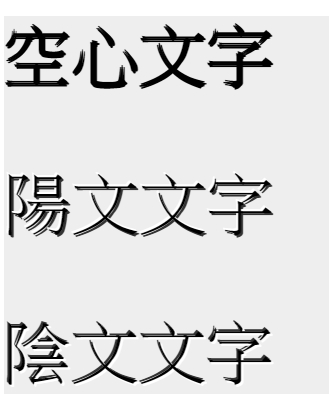
在指定文本陰影時，陰影的顏色可以接受任意合法的CSS顏色值，如預定義的顏色名、十六進制數值。RGB值、RGB百分比。RGBA值，HSL值。HSLA值。
需要注意的是，瀏覽器必須同時支持RGB和HSL顏色模式，及text-shdow屬性，才能渲染出陰影效果。考慮到瀏覽器的兼容性，一般會這樣聲明：
1 | text-shadow: 4px 4px #404442; |
也就是先定義一個使用十六進級顏色的陰影，作為對老瀏覽器的備用顏色。然後，再為現代瀏覽器定義一個使用RGBA、HSL和HSLA顏色的陰影。
3.2.11 文本方向
對於英文或中文等語言，默認是從左到右、從上到下進行閱讀。然而，并非所有語詞都題如此，還有許多從右向左閱讀的語言，如阿拉伯語和希伯來語等。
於是，CSS2.1引了direction屬性，用來定義文本流的書寫方向，可選值有ltr | rlt，默認值為ltr。ltr（left-to-right）表示文本流從左到右書寫，rtl（right-to-left）表示文本流從右到左書寫。
direction屬性影響塊級元素中文本的書寫方向。但不會影響拉丁文的字母數字字符。它總是從左到右書寫，但會影響拉丁文的標點符號。對於行內元素，只有當Unicode-bidi屬性設罝為embed或bidi-override時才有效。不支持雙向文本的瀏覽器可以忽略這個屬性。
這里定義兩個類，一個類的direrction屬性設罝為ltr，一個類的direction屬性設置為rtl。CSS代碼如下：
1 | <style> |
然後，把這兩個類應用到兩個段落，讓第一個段落中的文本從左到右書寫，讓第二個段落中的文本從右到左書寫，HTML代碼如下：
1 | <body> |
上述代碼的運行結果如下圖
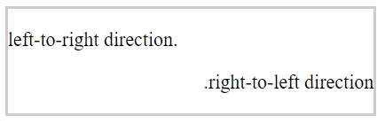
3.2.12 處理空白符
white-spae屬性用來設置文本內空白符（如空格、回車、tab字符）的處理方式，可選值有 normal | pre | nowarp | pre-wrap | pre-line，默認值為normal。該屬性出自CSS1，在CSS2.1中新增了屬性值pre-wrap和pre-line。不同取值的含義見下表
| 屬性值 | 含義 |
|---|---|
| normal | 忽略空白符[1]，但保留換行符，即碰到容器邊界時自動換行 |
| pre | 保留所有空白符[2]。即更文本超出容器邊界也不換行。其行類似HTML中的pre標籤 |
| pre-warp | 保留所有空白符，但保留換行符，即文本碰到容器邊界時自動換行 |
| pre-line | 合并空白序列[3]，但保留換行符，即文本碰到容器邊界時自動換行 |
注：[1]忽略文本開頭，結尾及換行符（回車）前面的空白符，并把換行轉換為空格，一行中多個連續的空白符，會被合并成一空格。[2]所有空白符保持原樣，不作任任何處理。[3]一行中多連續的空白符。會被合并成一個空格。
white-space屬性可以與overflow屬性結合使用，來控制文本超出容器邊界時的處理方式。在overflow屬性默認值的情況下，文本超出容器後，容器會出現滾動條。
可以把white-space屬性設置為nowrap，把overflow屬性設置為hidden，讓超出容器的文本自動隱藏。如
1 | <style> |
在html
1 | <body> |
上述代碼的運行的結果如下圖
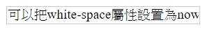
可以把white-space屬性設置為nowrap，再加入text-overflow把屬性設罝為ellipsis，讓超出容器的文本顯示為省略號。
1 | div:nth-child(3) { |
在html
1 | <body> |
運行結果如下圖
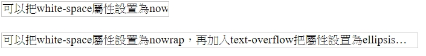
3.2.13 單詞折行
word-wrap屬性用來設置是否允許長單詞或URL地址在容器的邊界處自動換行，取值為normal | break-word，默認值為normal。
normal表示只允許在半角空格或連字符的地方換行，如果沒有半角空格或連字符，則長單詞或URL地址會撐大容器或溢出到容器的外面；break-world則表示允𧥸長單詞或URL地址在容器邊界處自動換行，顯示到下一行。
為了演示不同取值的效果，就可以使用world-wrap屬性，定義兩個不同的類。為了方更查看效果，為它們定義了個定寬度和邊框。CSS代碼如下
1 | <style> |
把上述兩個不同的類，應用到特定的段落，就可以看到長單詞或URL地址在容器的邊界處自動換行的不同效果。HTML代碼如下：
1 | <p class="normal"> welcome to https://ttom921.github.io/</p> |
上述代碼的運行效果如下圖所示
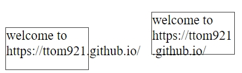
上圖中，在左側容器的word-wrap屬性取值為normal，URL沒有換行，而溢出到容器的外面。右側容器word-wrap屬性取值為break-word，在碰到容器邊界處，URL會自動換行，但是，它并不是按單詞換行，而是直接將URL截斷換行，這顯然會增加閱讀的難度。
3.2.14 單詞換行
word-break屬性用來規定自動換行的處理方式，它不僅可以讓瀏覽器在半角空格或連字符的後面換行，也可以實現在任意位置換行，可選值有 normal | keep-all | break-all，默認值為normal。
normal表示根據語言自身的換行規則，確定換行方式，中文將容器邊界的漢字換到下一行，西方文字則將整個單詞換到下一行； keep-all表示不允許把單詞截斷，在單詞內換行。
為了演示不同取值的效果，就可以使用word-wrap屬性，定義兩個不同的類。為了方更查效果，為它們定義了固定寬度和邊框。CSS代碼如下：
1 | <style> |
把上述兩個不同的類，應用到特定的段落，就可以看到單調在容器的邊界處自動換行的不同效HTML代碼如下：
1 | <body> |
上述代碼的運行的效果如下圖所示
上圖中，在側容器的word-break屬性取值為keep-all，其中的長詞ttom921-githubio在連字符進行換行。右側容器右側容器的world-break屬性取值為break-all，在長單調內部進行換行，單調被截斷。
white-space、word-warp、word-break的區別：
white-space:nowrap讓一段文本不換行，在一行內顯示。word-wrap:normal使一個單調或URL不折行，在一行內顯示。
word-wrap:break-word在容器邊界自動換行，會把整個長單調看鋰一個整䯤放到下一行，而不會把單調截斷。word-break:break-all在行末寬度不夠顯示整個單調時，會把單調截𪼙。
3.2.15 文本溢出
text-overflow屬性用來設容器內的文本溢出時，如何處理溢出的內容，取值為clipe | ellispsis默認值為clip。
clip表示文本溢出時，簡單的把溢出的部分裁剪掉； ellipsis表示文本溢出時，在溢出的地方顯示一個省略標記（…）。
在使用text-overflow屬性時，一定要給容器定義寬度，否則文本只會撐開容器，而不會溢出。
事實上，text-overflow屬性只能定義文本溢出時的效果，并不具備其它樣式功能。所以無論text-overflow屬性取值是clip，還是ellipsis，要讓text-overflow屬性生效，必須強制文本在一行內顯示（white-space:norwrap），同時隱藏溢出的內容（overflow:hiden）。
如果省略overflow:hidden，文本會横向溢出容器的外面，如果省略white-space:nowrap，文本在横向到達容器邊界時，會自動換行，即便定義了容器的高度，也不會出現省略號，而是把多餘的文本裁切掉，如果省略text-overflow:ellipsis，多餘的文本會被裁切掉，就相當於text-overflow:clip。
下面䌞出未設置text-overflow屬性、text-overflow屬性取值為clip和ellipsis時的效果對比。CSS代碼如下：
1 | <style> |
HTML代碼如下：
1 | <body> |
上述代碼定義了三個p容器，第一個未定義text-overflow,overflow'white-space屬性，第二個定義text-overflow屬性取值為clip，第二個定義text-overflow屬性取值為ellipsis。㷕了方便看清楚容器的邊界。為p定義了高度，同時添加了邊框。運行效果如下圖所示
從上圖可以看出，第一個段落的內容完整顯示但溢出到容器的外邊，第二個段落只是簡單的把溢出的部分裁剪掉，第三個段落在溢出的地方顯示了一個省略號。
3.2.16 Tab 寬度
在程序中，制表符（即tab字符，在C、Python等語言中，用\t表示）用來控級跳到下一個制表位，常用來控制文本的縮進。制表符的寬度，對於任何一款代碼編輯器來說，都是很必須的功能。而在網頁中，制表符的寬度也同樣是必須的功能。
默認情況下，瀏覽器通𡮝將HTML中制表符替換為8個空格來顯示，8個空格明顯太寬了，不能滿足大多數人的要求，并且不夠靈活。
因此，在CSS3中，新增了tab-size屬性，用來設罝對象中的制表符的寬度，其值可以是一個整數或長度值。整數表示制表符的寬度為字符寬度的倍數，默認值是8，即表示制表符的寬度為8個字符的寬度； 長度值表示制表符的寬度為指定的寬度值。
只有當一個元素的white-space屬性的值為pre或pre-wrap或pre-line時，tab-size屬性才會有效。而像pre、textarea這些元素，其white-space屬性的默認值就是pre，所以，可以直接使用tab-size屬性，而無需設罝white-space屬性。
4 盒模型
盒模型是CSS中一個重要概念，用來控制元素在頁面上如何顯示，是網頁設計中經常用到的一種思維模型。
在CSS1中，W3C初步制定了元素的基本外形特征，如寬度、高度、邊框、內邊距、外邊距、浮動等屬性。
到CSS2，才提出盒模型的概念，盒模型是從CSS角度，去看一個元素被渲染𢕝的抽象形態，用來描述一個元素自身的構成部分。
在CSS3中，可以靈活控制盒子的解析模式、背景、外觀等，為盒了添加圓角邊框和圖像邊框，還能為元素添加盒陰影。
本章內容：
- 概述
- 內邊距
- 外邊距
- 邊框
- 背景
- 盒尺寸
- 處理溢出
- 框的生成
- 框的外觀
4.1 概述
在盒模型中，把頁面上的任何一個元素都看做一個盒子，每個盒子由內容（content）、內邊距（padding）、外邊距（margin）這4 個區域組成。內邊距、邊框、外邊距是可選的，并且，都被分解為上、右、下、左4個部分。
一個盒子鄉，各個區域之間的關系，以及描述內邊距、邊框、外邊距的屬性和所涉及到的相關術語見下圖
從上上圖可以清楚看到，內容區處於中央，圍繞著內容區域的內邊距區域、邊框區域和外邊距區域，并把每個區域的邊緣被稱作邊界。
一個元素共有4個區域，每個區域都各有上、右、下、左4個邊界：
- 內容區域的外邊緣稱作內容邊界（content edge）或內邊界（inner edge）。把4條內容邊界所形成的區域稱作content-box；
- 內邊距區域的外邊緣稱作內邊距邊界（padding edge）。如果padding的寬度為0，則內邊距邊界與內容邊界相同。把4條內邊距邊界所形成的區域稱作padding-box；
- 邊框區域的外邊緣稱作邊框邊界（border edge）。如果border的寬度為0，則邊框邊界與內邊距邊界相同，把4條邊框邊界所形成的區域稱作border-box；
- 外邊距區域的外邊緣稱作外邊距邊界（margin edge）或外邊界（outer edge）。如果margin的寬度為0，則外邊距邊界與邊框邊界相同。把4條外邊距邊界所形成的區域作margin-box；
4.2 內邊距
內邊距是元素的邊框和內容之間的空白區域，用來控級元素邊框和內容之間的距離。
設罝內邊距的最簡單辦法就是使用padding屬性，其值可以是百分比、長度值，默認值是0，不允許負值。
內邊距是可選的，默認值是0。所以，如果沒有顯示聲明padding屬性，元素就不會出現內邊距。但是，瀏覽器卻為許多元素提供了默認的樣式，內邊距也不例外。所以，為了在所有瀏覽器下表現一致，常常需要設計師將元素的padding屬性設罝為0，來覆蓋瀏覽器默認樣式。該項工作可以針對具體元素進行，也可以使用通用選擇器對所有元素進行設置：
1 | * { |
不過，請記住，通用選擇器不區分元素，因此對某些元素（如，select控件中的option）產生不利影響。并且，通用選擇器會影響效率。所以，使用全局reset來顯示地將內邊距設置為0可能會更安全。如：
1 | body, p , h1, h2, h3, ul, ol { |
使用長度值設置內邊距時，可以接受任何長度值，包括絕對長度和相對長度。如，讓所有h1元素的各邊都有10的內邊距：
1 | h1 { |
有時候，可能希望一個元素各邊上的內邊距不同，這也很簡單。如果希望h1元素的上內邊距為10px、右內邊距為20px、下內邊距為30px、左內邊距為40px，只需應用以下規則：
1 | h1 { |
這些值的順序很重要，必須遵循上、右、下、左的模式，即從上（top）開始，圍著元素順時針旋轉。所以，如果得到想要的效果，必須正確安排各個值的順序。
不過，如果只增加內邊距，要真正看到所設置的內邊距可能有些困難，由於默認情況下，背景色會延伸到邊框的外框界，因此可以為元素添加背景色，在內邊距區域就能看到背影色，可以間接看到內邊距：
1 | div { |
使用百分比設置內邊距時，元素的左右內邊和上下內邊距，都是相對於父元素的width進行計算。假如在容器div中有一個h1標題：
1 | <div> |
如下的圖
現在，把容器的寬度設置為400px，把h1標題的padding屬性的值設置為5％，則得到內邊距的值為400px * 5% = 20px, 為了更於觀察，為h1標是增加了1px的虛邊框：
1 | <style> |
運行結果如下圖
當內邊距設置為百分比時，如果父元素的width以某種方式發生改變，則內邊距的值也會隨之改變，如在父元素的width的也設置為百分比時，改變瀏覽器窗口大小，h1的內邊距也會隨之改變。
內邊距的值也可以混合使用長度值和百分比，并且，可以使用各種類型的長度值，一個規則并不限制只能使用一種長度類型：
1 | h1 { |
有時候，為內邊距輸入的值可能會重覆。為了方便，CSS允許為padding屬性提供1～4個值，讓瀏覽器根據提供的參數值個數來決定作用對象。規則如下：
如果提供一個值，將用於全部的四方向
如果提供兩個值，第一個用於上、下、第二用於左、右。
如果提供三個值，第一個用於上，第二個用於左、右，第三個用於下。
如果提供四個值，將按上、右、下、左的順序作用四邊。
有時候，確實需要僅僅設置元素單邊上的外邊框距。幸運的是，CSS提供了padding-top屬性、padding-right屬性、padding-bottom屬性、padding-left屬性，這些屬性專門用來設置元素單邊內邊距。
這些屬性的名字一目了然，使用其中任何一個屬性，將只設置該邊上的內邊距，而不影響其他內邊距。一個規則中可以使用多個單邊屬性。如，使用單邊屬性把h1元素的上內邊距10px、右內邊距為20px、下內邊距為30px、左內邊距為40px:
1 | h1 { |
當然，對於這種情況，使用padding屬性可能更容易一些：
1 | h1 { |
上述規則是等價，無論使用哪種，得到的結果都一樣。一般情況下，如果想為多個邊設置內邊距，使用padding屬性會更容易一些。不過，從顯示結果的角度看，使用哪種方法都不重要，所以應該選擇一種更容易的方法。
說明：
當使用em來定義元素的寬度、高度、內邊距、外邊距、邊框寬度時，它的值是相對於元素自身的字體大小，而不是相對於父元素的字體大小。
4.3 外邊距
外邊距會在元素外創建額外的空白區域，這個區域不能放置其他元素。因此，大多數情況下，普通流中都是通過外邊距來控制元素之間的距離，使元素間出現間隔。
外邊距默認是透明的，在這個區域中可以看到父元素的背景。也不能通過任何屬性，來為外邊距設罝顏色，或讓其不透明。但是，可以通過margin屬性來設置外邊距的寬度，其值可以是百分比，長度值、或auto。
由於外邊距也是可選的，默認值是0。所以，如果沒有顯示聲明margin屬性，元素就不會出現外邊距。同樣，瀏覽器也為外邊距提供了默認的樣式，需要設計師進行重置。如：
1 | <style> |
使用長度值設置外邊距時，可以接受任何長度值，包括絕對長度和相對長度，如，在段落元素周圍應用一個10px的空白域：
1 | p { |
使用百分比設置邊距時，元素的左右外邊距和上下外邊距，都是相對於父元素的width進行計算，如果父元素的width以某種方式發生改變，外邊距的值也會隨之改變。
外邊距的值釓可以混合使用長度值和百分比，并且，可以使用各種類型的長度值，如果希望一個元素各邊上的外邊距不同，同樣遵循上、右、下、左的模式，也允許提供1～4個值，作用規則與padding相同：
1 | p { |
CSS也為外邊距提供了單邊的屬性，使用其中任何一個屬性，將只設置該邊上的外邊，而不影響其伳外邊距：
1 | p { |
一個元素的外邊距可以是值，也柯以是負值。當元素之間是父子關系時，通過設子元素的外邊距為負值，可以將子元素從父元素中分離出來，或都與其他元素重疊，如，在一個容器div中有兩個段落：
1 | <body> |
現在，把第一個段落的外邊距設置為正值，第二個段落的外邊距設置為負值。為了方更查看，為容器和段落都設置了虛線邊框：
1 | div { |
上述代碼的運行結果如下圖所示
從上個可以看出，負外邊距導致第二個段落超出了容器，跑到了容器的外面，似它的尺寸比容器寬了一些。
在把一個元素的margin屬性設罝為負數時，一定要倍加小心，因為元素可能部分或完全脫離頁面，或覆蓋頁面上的其他內容。
當然，有時候可以利用這個特性，把一個元素的margin屬性設置為一個很大的負數，使它移動到屏幕之外，來隱藏這個元素。然後，在需要的時候，恢後其margin屬性，讓它正常顯示出來。
4.4 邊框
在CSS1中，就支持為元素添加邊框，并可以設罝邊框的樣式、顏色、及粗細。不過，當時的邊框太過單一，只持簡單的線條邊框。
在CSS3中，為了實現豐富的邊框效果，對邊框𨌌性進行了擴展，除了線條框外，也可以把圖像作為邊框，同時還可以創建圓角邊框，也可以使用盒陰影來為元素添加一個或多個邊框陰影。
線條邊框使用border屬性定義，圖像邊框使用border-image屬性來定義，圓角邊框使用border-radius屬性定義，盒陰影使用box-shadow屬性定義。
4.4.1 線條邊框
為元素定義線條邊框，最簡單的辦法就是使用border屬性。border為復合屬性，語法格式為：
1 | border: <border-style> || <border-width> || <border-color> |
也就是說，border屬性可以分解為邊框樣式（border-style）、邊框寬度（border-width）、邊框顏色（border-color）這3個屬性，接下來分別進行介紹。
border-style
border-style屬性是一個非常重要的邊框屬性，如果沒有顯示定義border-style屬性，或把border-style屬性設置為none，元素將沒有邊框，并忽略border-color屬性和border-width屬性。
border-style屬取值為預定義關鍵字，CSS內置了10種不同的邊框樣式，每個樣式都由一個預定義關鍵字來定義
屬性值 樣式說明 none 無邊框，不占據頁面空間，同時忽略border-color屬性和border-width屬性 hidden 隱藏邊框，它有邊框，只是不可見 dotted 點狀線 dashed 虛線 solid 實線 double 雙線，兩條單線與其間隔的和等於指定的border-width屬性的值 groove 3D凹槽 ridge 3D凸槽 inset 3D凹邊 outset 3D凸邊 如果一個元素的邊根、背景、內容發生重疊，則邊框繪制在元素的背影之上，內容之下。這10種不同的邊框樣式，在瀏覽器中的渲染效果如下圖
如果border-width屬性設置為0，則忽略border-style屬性。可以為給定的邊框定義多個樣式。如以下規則定義的上邊框為點狀線、右邊框為單實線、下邊框為雙實線、左邊框為虛線：
1
border-style: dotted solid double dashed;
可以看出，border-style屬性的4個參數也采用top-right-bottom-left的順序，其作用規則與padding相同。
有時候，你可能只想為元素的一邊設罝邊框樣式，而不是同時設置所有的4個邊。這就要用到單邊邊框的樣式屬性，按上、右、下、左的順序，對應的屬性依次為border-top-style、border-right-style、border-bottom-style、border-left-style。
border-width
border-width屬性用來設置邊框的粗細程度，可以使用長度值或預定義關鍵字thin | medium | thick，默認值為medium。長度值表示具體的數值，如2px或0.5em，不允許負值。
如果未顯式聲明border-width屬性，則邊框的寬度或都為零（使用reser css時），或都為瀏覽器的默認值（很可能不是零，尤其是那些通常沒有重置的表單元素）。
如果border-style屬性的值為none，則為論是否顯示定義邊框的寬度，其寬度都會被自動設置為0，由於border-style屬性的默認值是none，因此，如果希望邊框出現，就必須顯式聲明一個邊框樣式。
border-width屬性需要4個參數值，也采用top-right-bottom-left的順序。如
1
border-width: 1px 2px 3px 4px;
上述規則就表示上邊框的寬度為1px、右邊框的寬度為2px、下邊框的寬度為3px、左邊框的寬度為4px。
也可以使用單邊屬性，按上、右、下、左的順序，border-width對應的屬性依次為border-top-width、border-right-width、border-bottom-width、border-left-width。
border-color
border-color屬性用來設置邊框的顏色，其值可以是任意合法CSS的顏色，如預定義的顏色加，十六進制數值、RGB、RGBA、HSL、HSLA。在CSS2中，還引入了邊框顏色值transparent，這個值使邊框透明，用於創建有寬度但不可見的邊框。
如果border-width屬性的值等於0或border-style屬性的值為none，則忽略該屬性，border-color屬性需䵂4個參數值，也采用top-right-bottom-left的順序。如
1
border-color: red black green blus;
上述規則就表示上邊框的顏色為紅色、右邊框的樣式為黑色、下邊框的樣式為綠色、左邊框的樣式為藍色。
邊框顏色按上、右、下、左的順序，border-color屬性對應的獨立屬性依次為border-top-color、border-right-color、border-bottom-color、border-left-color。
默認情況下，一個元素的邊框顏色為元素內容的前景色。因此，如果沒有顯示聲明邊框顏色，邊框的顏色將與元素的文本顏色相同，可果該元素不包含依何文本，如只包含圖像，那麼它的邊框顏色，𧚱是其父元素的文本顏色（因為color屬性具有繼承性）。
說明：單邊復合屬性
在定義單邊屬性時，如果每次都要使用諸如border-top-width、border-top-color這樣的屬性，就會帶來諸多不便。
于是，CSS也專冊為單邊定義了復合屬性，按上、右、下、左的順序，對應的單邊屬性依次為border-top、border-right、border-bottom、border-left，它們的語法相同，格式如下：
1
border-top: <border-style> || <border-width> || <border-color>
有了這些屬性，就可以創建一些復雜的邊框，如以下規則為容器的4個邊創建了4種不同的邊框：
1
2
3
4
5
6
7
8
9
10<style>
div {
width: 200px;
height: 60px;
border-top: 10px dotted #006dcc;
border-right: 10px solid #da4f49;
border-bottom: 10px dashed #5bb75b;
border-left: 10px double #faa732;
}
</style>上述代碼的運行效果如下圖
實際上，在聲明單邊屬性時，具體值的順序并不重要，瀏覽器可根據值的類型自動識別，并應用到相應的屬性，所以，以下三個規則會得到相同的邊框效果：
1
2
3div { border-top: 10px dotted #006dcc; }
div { border-top: dotted 10px #006dcc; }
div { border-top: #006dcc dotted 10px; }并且，如果希望某個值使用默認值，也可以省略其值，如以下規則就表希望邊框使用與容器中的文本相同的顏色：
1
div { border-top: 10px dotted; }
需要注意的是，這些單邊屬性只能應用到一個特定的邊，因此，只需聲明一個寬度值、一個顏色值和一個邊框樣式值。否則，將導致整個聲明無效。
4.4.2 圖像邊框
為了實現豐富多彩的邊框效果，在CSS3中，新增了border-image屬性，這固新屬性允許指定一幅圖像作為元素的邊框。該屬性的優點是，可以根據一些簡單的規則，把一幅圖像劃分為9個單獨的部分，瀏覽器會自動使用合適的部分作為邊框的對應部分。
需要注意的是，只有當border-style屬性取值為none時，border-image屬性才會有效。所以，如果定義的邊框圖像顯示不出來，首先需要檢查border-style屬性的值是否為none。
border-image是復合屬性，其語法格式為：
1 | border-image: <'border-image-source'> || <'borderimage-slice'> [/<'border-image-width'> | /<'border-image-width'>? /<'border-image-outset'>]? || <'border-image-repeat'> |
也就是說，border-image屬性可以分解為border-image-source、border-image-slice、border-image-width、border-image-outset、border-image-repeat這5個屬性，下面分別進行介紹。
border-image-source
border-image-source屬性用于指定邊框圖像的URL地址，萬值為none | url，默認值為none。url可以是相對路徑，也可以是絕對路徑，跟CSS1中background-image屬性相似。當該屬性的取值為none。或url無效時，邊框將使用border-style屬性的值。
border-image-slice
border-image-slice屬性的作用是按照指定寬度，對邊框圖像進行切片，其語法格式為：
1
border-image-slice : [<number> | <percentage>] {1,4} && fill?
該屬性需要4個參數值，依次指定top、right、bottom、left這4個方向上的切割寬度。其值可以長度，也可以是百分比。長度為純數字，無需指定單位，默譇使用px為單位；百分比，top、bottom相對于邊框圖像的高度，right、left相對于邊框圖像的寬度。4個參數值可以使用簡寫方式，規則與border-width相同。fill為可選值，用來設置中間的第九塊是否為非透明塊，默認為透明塊。
假設有一個81px的正方形圖像，包含9個菱形圖案，每個菱形圖案的尺寸為27px*27px。如下圖所示

在border-image-slice：27的情況下，4個方向上的切割寬度均為27px，切割過程如下圖所示
從上圖可以看出，經過4次切割後，邊框圖像被切成9個切片，即左上角（top-left）、右上角（top-right）、右下角（bottom-right）、左下角（bottom-left）4個橙紅色棱形，上（top）、右（right）、下（bottom）、左（left）為4個橙黄色菱形，加中間的透明區域。如下圖所示
之所以要切成9片，是因為盒模型中，一個盒子有內容區域、加上邊框的4個角和4條邊，正好9個區域。
這9個切片中，4個角上的每個切片，將分別用作元素邊框的4個角、4修邊上的每個切片，將分別用作元素邊框的4條邊、中間切片用作元素內容區域的背景（如果設置fill）
border-image-width
border-image-width屬性用來定義邊框圖像的顯示區域，即切片的最大顯示寬度。
如果該屬性定義的值大于border-image-slice屬性的值，則4個角和4個邊的切，在水平和垂直方向都會被拉伸到該屬性指定的值；如果該屬性定義的值小于border-image-slice屬性的值，則使用該屬性的值。
如，border-image-slice屬性的值為27，而border-image-width屬性的值為54px。由于邊框寬度大于border-image-slice屬性的值，切片會被拉伸。代碼如下
1
2
3
4
5
6
7
8
9
10<style>
div {
border: 1px solid transparent;
width: 300px;
height: 120px;
border-image-slice: 27;
border-image-width: 54px;
border-image-source: url(../img/border-image.png);
}
</style>上述代碼運行如下
說明：
border-image-width屬性定義的是邊框圖像的顯示區域，即切片的最大顯示寬度，跟元素的邊框寬度沒有關系，元素邊框的寬度由border-width屬性定義。
所以， 當設罝的border-image-width大于邊框寬度時，邊框圖像會對元素自身和周圍的元素產生影響。
border-image-outset
border-image-outset屬性的作用是讓邊框圖像外凸，延伸到盒子外面。其語法格式為：
1
border-image-outset: [ <length> | <number> ]{1,4}
該屬性需要4個參值，依次指定top、right、bottom、left這4個方向上向外延伸的量，默認值為0。值可以長度，也可以是數字。長度表示延伸的寬度，數字表示延伸相應邊框的border-width計算值的倍數。4個參數值可以使用簡寫方式，規則與margin相同。
假設頁面上有兩僤盒子，左邊的盒子未指定邊框圖像外凸，右邊的盒子指定邊框圖像外可27px（即一個切片的寬度）：
1
2
3
4
5
6
7
8
9
10
11
12
13
14div {
display: inline-block;
border: 1px solid transparent;
width: 128px;
height: 128px;
border-image-source: url(../img/border-image.png);
border-image-slice: 27;
border-image-width: 27px;
border-image-repeat: repeat;
}
.outset {
border-image-outset: 27px;
}1
2
3
4
5
6
7
8
9
10<hr>
<hr>
<hr>
<div>
</div>
<div class="outset">
</div>上述代碼運行結果如下圖
需要注意是，邊框圖像外凸後，就會延伸到盒子的外面，如果外凸的寬度過寬。邊框圖像可能會覆蓋周圍的元素。
但是，由于邊框圖像并不是元素盒模型中的內容，因此，即便邊框圖像延伸到元素的邊界之外，甚至覆蓋其它元素，也不會對頁面希局產生任何影響。
border-image-repeat
border-image-repeat屬性用來定義邊框圖像的9個切片中，top、right、bottom、left對應的4個切片是以拉伸方式顯示，還是以平鋪方式顯示。
由于每條邊只使用一個切片，所以，當邊框的長度大于單個切片的長度時，單個切片就不能填滿邊框，就需要拉伸或平鋪。不同取值的含義見下表
屬性值 含義 stretch 默認值，切片拉伸以填滿整個邊框區域 repeat 切片重覆以填滿整個邊框區域 round 切片重復以填滿整個邊框區域。當不能用整數個切片填滿整個邊框區域時，對每個切片進行縮放，以保証每個切片完整 space 切片重復以填滿整個邊框區域，當邊框區域的尺寸不是切片尺寸的整數倍時，多餘的空間由每個切片均分 該屬性需要2個參數，如果提供2個參數，第一個用于top和bottom，第二個用于left和right； 如果只提供1個參數，則同時用于top、right、bottom、left。
假設頁面上有四個盒子，盒子的寬度和高度分別為380px和118px，即n個切片尺寸+10px，每個盒子的border-image-repeat屬性分別取值stretch、repeat、round、space：
1
2
3
4
5
6
7
8
9
10
11
12
13
14
15
16
17
18
19
20
21
22
23
24
25
26
27
28
29div {
text-align: center;
vertical-align: middle;
line-height: 118px;
border: 1px solid transparent;
width: 380px;
/*10個切片的寬度+10px*/
height: 118px;
/*4個切片的寬度+10px*/
border-image-slice: 27;
border-image-width: 27px;
border-image-source: url(../img/border-image.png);
}
.stretch {
border-image-repeat: stretch;
}
.repeat {
border-image-repeat: repeat;
}
.round {
border-image-repeat: round;
}
.space {
border-image-repeat: space;
}1
2
3
4<div class="stretch">border-image-repeat: stretch</div>
<div class="repeat">border-image-repeat: repeat</div>
<div class="round">border-image-repeat: round</div>
<div class="space">border-image-repeat: space</div>上述代碼的運行結果如下圖
從上圖可以看出，當border-image-repeat屬性取值stretch時，由于切片不會重覆，會將單個切片進行拉伸到整個邊框的尺寸；當取值round時，每個切片保持完整，取其它值，切片就會進行重覆，以填滿邊框區域。
4.4.3 圓角邊框
在Web頁面上，圓角效果是美化頁面的常用手法之一，圓角給頁面添加曲線之美，讓頁面不那麼生硬。但是，為了設計圓角，設計師常常需要花費很多的時間和精力。
在CSS3中，專門針對圓角效果增加了一個border-radius屬性，通過該屬性，便可以輕松實現圓角效果，設計師不必再為圓角而傷透腦筋。
border-radius屬性的值為邊框的圓角半徑，可以使用任意合法的CSS長度值，如em、pt、px、百分比等。
定義border-radius後，瀏覽器將用1/4橢圓來繪制元素相應的角，4個角上對應的圓角屬性分別是border-top-left-radius、border-top-right-radius、border-bottom-right-radius、border-bottom-left-radius，其語法格式為：
1 | border-*-radius : [<length> | <percentage>] {1,2} |
也就是說，定義border-*-raduis屬性時，需要提供兩個參數值，第一個參數用于橢圓的横軸半徑，第二個參數用于橢圖的縱軸半徑。
如果只是供1個值，表示横軸半徑與縱軸半徑相等，如果某個值為0，則使用方角，不使用圓角。使用百分比時，横軸半徑根據元素的width計算得到，縱軸半徑框據元素的height計算得到。
如把一個元素的横軸半徑設置為55pt，縱軸半徑為25pt，對應的CSS岱碼為：
1 | <style> |
1 | <body> |
上述代碼的效果如下圖
這樣給元素設置單個圓角效果，費時費力，而且難以維護，也容易出錯。其實，完全可以供助復合屬性border-radius，來實現4個屬性相同的效果。語法格式為：
1 | border-radius: <length>{1,4} [/ <length>{1,4}} ] ? |
也就是說，border-radius屬性需要2組參數，并以/分隔。第1組參數用于橢圖的横軸半徑，第2組參數用于橢圓的縱軸半徑，如果省略第2組參數，則使用第1組參數的拷貝。每組參數中，允許設置1～4個值。分別根據所提供值的個數來決定作用對象，遵循以下規則：
如果提供一個，將用于全部的四個角
如果提供兩個，第一個用于左上、右下，第二個用于右上、左下。
如果提供三個，第一個用于左上，第二個用于右下，左下，第三個用于右下。
如果提供四個，將按左上、右上、右下、左下的順序作用于四個角（順時針順序）。
如border-radius：2em 1em 4em /0.5em 3em,提供了2組參數，第1組參數提供3個值，第2組參數提供2個值。其作用就相當于：
1 | border-top-left-radius: 2em 0.5em; |
事實上，只要一個元素通過border-radius屬性定了圓角，而無論它是否定義邊框，瀏覽器都會按圓角進行渲染。對於圖像、或具有背景的元素，很容易看到這個效果。
利用這個特點和圖形幾何特性。可以很輕松實現許多有趣的效果，如圓形，半圓形，扇形，橢圓形等。
圓形
如果橢圖的横向半徑和縱向半徑相等，橢圓就會變成圓。如果一個元素為正方形，就利用這個特性，把圓角的半徑設置為寬度或高度一半，即可把正方皾按圓形顯示，當然，如果把圓角的半徑設置為50％會更方便，因為半徑會隨元素的尺寸自動調整。如：
1
2
3
4
5img {
width: 100px;
height: 100px;
border-radius: 50%;
}1
<img src="../img/2019-09-02.jpg">
運行效果如下圖
半圖形
制作半圓形跟制作圖形的方法相同，只是而要元素的寬度和高度，與不同方位的圖角半徑進行適當配合。如果元素的寬度是高度的2倍，且圓角半徑等于元素的高度值，就可以得到上半圓或下半圓；如果元素的高度是寬度的2倍，且圓角半徑等于元素的寬度值，㕻可左半圓或右半圓。如
1
2
3
4
5
6img:nth-child(2) {
width: 140px;
height: 70px;
border-radius: 70px 70px 0 0;
}1
2<img src="../img/2019-09-02.jpg">
<img src="../img/2019-09-02.jpg">運行效果如下圖
扇形
通過border-radius制作的扇形，實際上就是制作四分之一圓形，如果把圖形的3個半徑設置為0，讓圖形只剩下四分之一，就會得到扇形。通過改變圓角的位置，就可以制作出左上、右上、右下、左下四動扇的效果。如
1
2
3
4
5
6img:nth-child(3) {
width: 100px;
height: 100px;
border-radius: 100% 0 0 0;
}1
2
3<img src="../img/2019-09-02.jpg">
<img src="../img/2019-09-02.jpg">
<img src="../img/2019-09-02.jpg">運行效果如下圖所示
橢圖形
根據幾何特性，橢圓實際上就是圖形受到擠壓後得到的形狀，橢圓有兩種，一種是水平橢圓（長軸在横軸方向），一種是垂直橢圓（長軸在縱軸方向）。因此，橢圓的横軸半徑始終等于元素的寬度，縱軸半徑始終等于元素的高度，如：
1
2
3
4
5img:nth-child(4) {
width: 200px;
height: 100px;
border-radius: 200px / 100px;
}1
2
3
4<img src="../img/2019-09-02.jpg">
<img src="../img/2019-09-02.jpg">
<img src="../img/2019-09-02.jpg">
<img src="../img/2019-09-02.jpg">運行效果如下圖所示